ABOUT VITRA
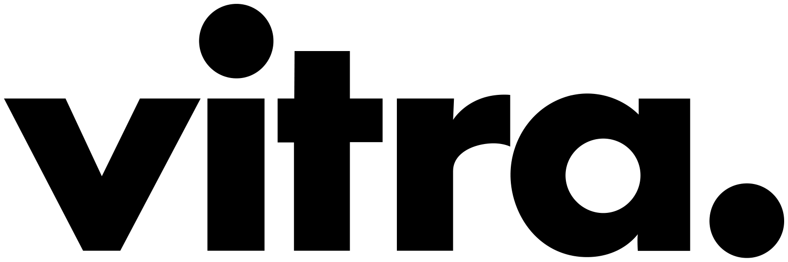
目录
01 开篇
1934 年，Willi Fehlbaum 在瑞士巴塞尔附近的比尔费尔登（Birsfelden）接手一家店面陈设作坊，做起店铺装修与玻璃陈列柜的生意。1950 年，生产迁至德国边境小城莱茵河畔魏尔（Weil am Rhein），"Vitra"商号在这一年启用——官方词源解释为法语/德语"Vitrine"（玻璃陈列橱窗）。1953 年，Willi 在美国旅行中见到 Charles 与 Ray Eames 夫妇设计的椅子，决定改行做家具；1956 年，Vitra 成为美国办公家具公司 Herman Miller 在欧洲大陆的被许可方，开始在欧洲生产销售 Eames 夫妇与 George Nelson 的设计。1984 年两家合作解散，Eames、Nelson 与 Alexander Girard 的设计在欧洲与中东的生产销售权划归 Vitra——这条版权分治线至今划定了 Vitra 产品矩阵的边界。
1981 年 7 月 18 日，一场雷击大火烧毁魏尔厂区大部分厂房，保险只覆盖六个月停产。重建没有走"找一家总包"的老路，而是邀请多位明星建筑师各设计一栋建筑，逐年累积成今日的 Vitra Campus 园区：Frank Gehry 的 Vitra Design Museum（1989）、Zaha Hadid 的消防站（1993）、安藤忠雄的会议中心（1993）、Herzog & de Meuron 的 VitraHaus（2010）与 Schaudepot（2016）、Balkrishna Doshi 的沉思空间（2025）。建筑评论家 Philip Johnson 1999 年首访后写道：自 1927 年斯图加特魏森霍夫住宅展以来，西方世界最杰出建筑师的作品从未在同一地点如此聚集。
家族三代经营贯穿公司史：第二代 Rolf Fehlbaum 1977 年接管，1989 年创办独立基金会性质的 Vitra Design Museum，把"经典再版＋当代共创"确立为产品逻辑；第三代 Nora Fehlbaum 2016 年起任 CEO，2026 年转任董事会主席，CEO 一职交予前 IKEA 高管 Claudio Marconi，创意总监由前 Artek 的 Marianne Goebl 出任。产品目录里，Eames Lounge Chair（1956）、Panton Chair（1967 量产）、Jean Prouvé 的 Standard 椅（1934/1950）等经典持续在产，Verner Panton 的塑料悬臂椅从 1967 年至今已历经五代材料沿革；当代线则与 Ronan & Erwan Bouroullec、Hella Jongerius、Jasper Morrison、Antonio Citterio 等合作者共建"作者"名录。
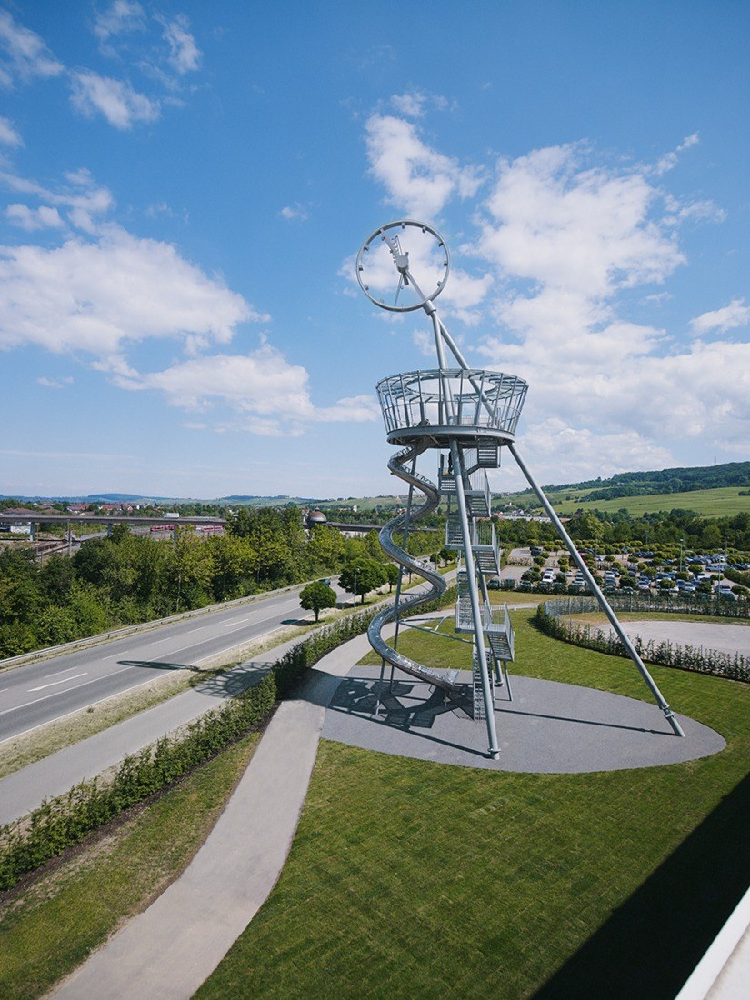
图：Carsten Höller 设计的 30.7 米滑梯塔（2014 年落成）——园区公共艺术与建筑实验的视觉标志，六米直径钟面挂于塔顶。图源：Vitra Design Museum 园区页。
02 品牌概述
Vitra 是瑞士家族家具企业，1934 年由 Willi Fehlbaum 以店面陈设作坊起家，1950 年迁至德国魏尔并启用现名，1956 年起成为美国 Herman Miller 在欧洲大陆的被许可方，1984 年分治后获得 Eames、Nelson、Girard 设计在欧洲与中东的生产销售权。现行法人实体为 Vitra International AG（总部 Klünenfeldstrasse 22, 4127 Birsfelden, Schweiz），生产基地位于德国魏尔与新恩堡、匈牙利松博特海伊、芬兰图尔库、日本菅户。官方定位原文："与顶尖设计人才共同创造创新的产品与概念，是 Vitra 的本质；其经典系列代表 20 世纪开创性设计。"（Creating innovative products and concepts with great design talent is Vitra's essence. With its classics Vitra represents groundbreaking 20th century design.）公司把合作设计师称为"作者"（authors），把"持续生产过去的杰出产品，直到它们不再具有意义"与"和当代才俊共创、期待其中诞生新的经典"并列为产品哲学（Rolf Fehlbaum 语）。
| 项目 | 内容 |
|---|---|
| 品牌名 | Vitra（源自法语/德语 Vitrine，玻璃陈列橱窗；现行法人 Vitra International AG） |
| 国家/地区 | 瑞士（1934 年比尔费尔登起家；总部 Birsfelden；主厂区德国莱茵河畔魏尔） |
| 成立时间 | 1934 年陈设作坊；1950 年迁厂并启用 Vitra 商号；1953 年转向家具制造；1956 年成 Herman Miller 欧洲被许可方 |
| 创始人 | Willi Fehlbaum 与 Erika Fehlbaum（第一代）；Rolf Fehlbaum（第二代，1977 年接管）；Nora Fehlbaum（第三代，2016 年任 CEO，2026 年起任董事会主席） |
| 代表性设计人物 | Charles & Ray Eames、George Nelson、Verner Panton、Jean Prouvé、Ronan & Erwan Bouroullec、Hella Jongerius、Jasper Morrison、Antonio Citterio、Konstantin Grcic、Frank Gehry、Panter&Tourron、Edward Barber & Jay Osgerby |
| 官方理念 | "与顶尖设计人才共创"；"经典代表 20 世纪开创性设计"；设计师被称为"作者"；"生产过去的杰出产品，直到它们不再具有意义；与当代最有才华的人共同开发，希望其中有一天诞生新的经典" |
| 品牌归属 | Fehlbaum 家族全资持有、未上市；2026 年 CEO 交予非家族职业经理人 Claudio Marconi，Nora Fehlbaum 任董事会主席 |
| 核心业务 | 住宅家具（座椅、沙发、桌椅、办公椅与配件）＋办公/公共空间合同业务；经典再版与当代共创双轨 |
| 经典产品 | Eames Lounge Chair（1956）、Eames 模压胶合板椅 LCW/DCM（1945/1946）、Panton Chair（1967 量产）、Standard 椅（1934/1950）、Vegetal（2008）、Polder Sofa（2005）等 |
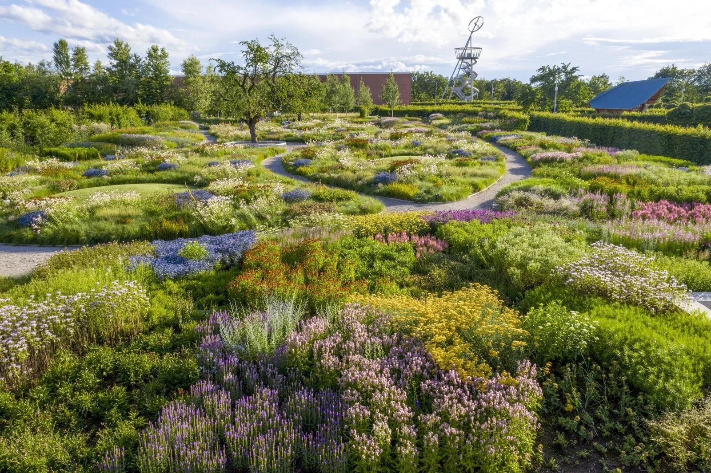
图：Piet Oudolf 设计的多年生植物园（VitraHaus 前）——园区作为公共景观与旗舰店前院的组合形态。图源：Vitra 官方可持续报告访谈配图。
03 Brand 品牌：从巴塞尔陈设作坊到"作者设计"之厂
1934：从店面陈设作坊起步
官方园区新闻稿口径：公司由 Willi Fehlbaum 于 1934 年作为店面陈设作坊创立（shopfitting business），日语行业资料补充为当年接管一家 1906 年在巴塞尔成立的陈设公司、与妻子 Erika Fehlbaum 共同经营。1950 年，生产从瑞士比尔费尔登迁至德国魏尔，Vitra 商号在这一年启用，官方《行为准则》强调这一年"Erika 与 Willi 共同经营公司"。"Vitra"一词源自法语/德语"Vitrine"（玻璃陈列橱窗）——对应早期的店面陈设业务。1953 年，Willi 在纽约之行中见到 Eames 夫妇设计的椅子，由此决定从陈设转向家具制造。
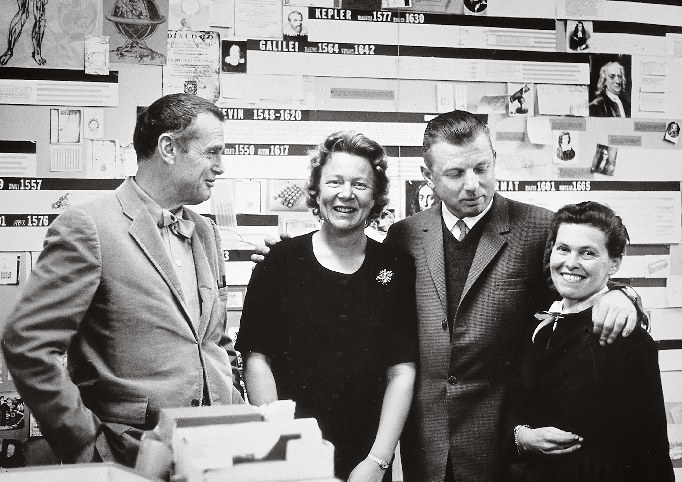
图：Willi 与 Erika Fehlbaum 夫妇 1960 年代在 Eames Office 的合影——创始夫妇与 Eames 夫妇长期合作的记录。图源：Vitra 官方可持续报告。
1953–1958：Eames 缘起与 Herman Miller 许可
术语注释：Herman Miller——美国办公家具公司，Vitra 早期的欧洲许可方与版权伙伴。
1953 年 Willi 访美见到 Eames 椅子后，同年首次接触 Charles 与 Ray Eames 夫妇，随后赴洛杉矶拜访；1956 年 Vitra 成为 Herman Miller 在欧洲大陆的被许可方（两家官方口径均为此年份），合作成功后双方成立合资公司推进欧洲业务。1957 年 Willi 首访洛杉矶 Eames Office，1958 年 Eames 夫妇回访巴塞尔，当时的长子 Rolf Fehlbaum 担任翻译。这段合作把 Eames 夫妇的设计引入欧洲市场，也奠定了 Vitra 此后数十年"为设计经典做欧洲制造"的底色。
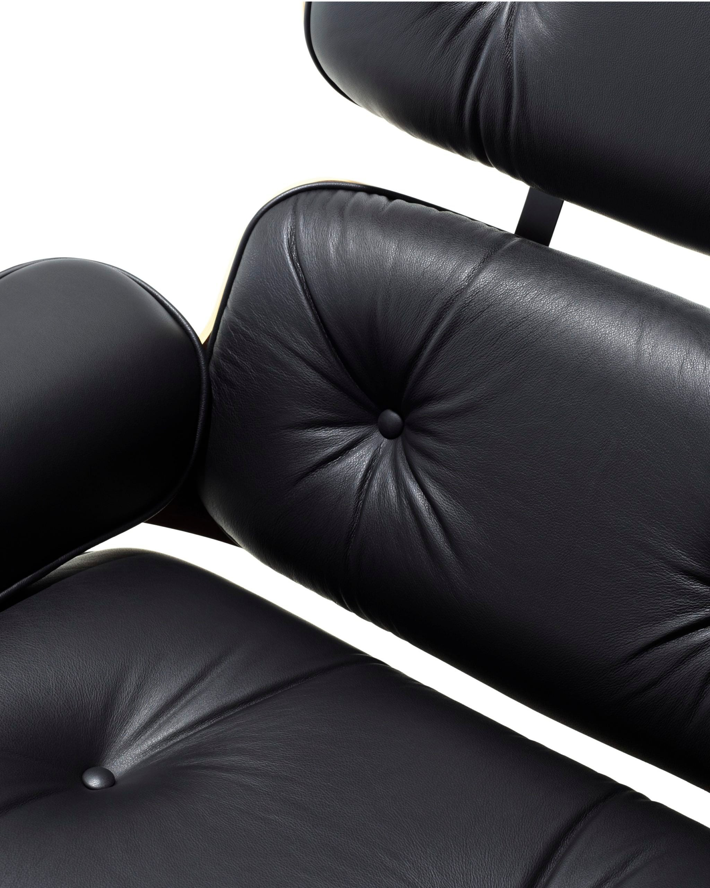
图：Eames Lounge Chair & Ottoman 侧面形态（三层独立胶合板弯壳与压铸铝底座）。图源：Eames Office 官方产品页。
1984：合作解散与版权分治
Herman Miller 官方口径："当合作在 1984 年解散时，Eames、Nelson 与 Girard 的设计在欧洲与中东的权利被划归 Vitra，而 Herman Miller 的名称与产品线由 Herman Miller 保留。"现行权益格局（双方官网现行口径一致）：Eames、Nelson、Girard 的家具，Herman Miller 持有除欧洲与中东以外全球权益，Vitra 持有欧洲与中东权益；其中 Eames 的 Organic Chair、La Chaise、Eames Elephant、纸品/海报/毛毯/微缩模型系列，以及 George Nelson 的时钟与微缩模型系列，Vitra 持有全球权益。这条"区域分治"划定了两家公司产品目录的边界，也解释了为何同一把 Eames Lounge Chair 在美洲由 Herman Miller 制造、在欧洲由 Vitra 制造。
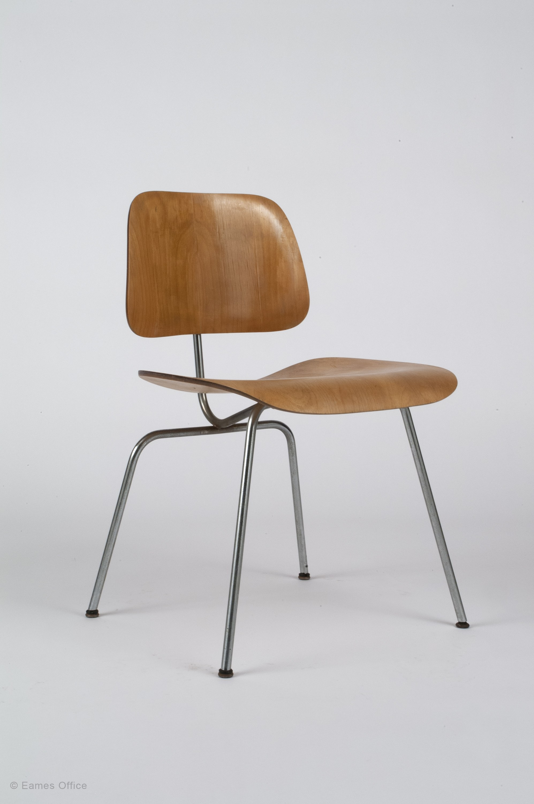
图：Eames DCM 餐椅（1946）——两片模压胶合板与钢棒支腿的结构组合。图源：MoMA 馆藏页。
1977：Rolf Fehlbaum 接管
Rolf Fehlbaum 生于 1941 年，社会科学出身，博士论文研究乌托邦社会主义，入司前从事艺术版画、纪录片与建筑教育。1976 年入司、1977 年接管公司经营；其弟 Raymond Fehlbaum 长期主管家族店面陈设分支 Vizona。Rolf 1980 年代开始私人收藏家具，1986 年委托 Frank Gehry 设计展陈建筑，最初设想只是为私人收藏建一座陈列馆，经与首任馆长 Alexander von Vegesack 相遇后，扩展为对设计史进行研究与巡展的公共博物馆——1989 年，Vitra Design Museum 以独立基金会形态开馆。
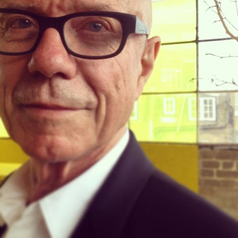
图：Rolf Fehlbaum（1941 年生）——第二代掌门，1977 年接管公司，Vitra Design Museum 创办人，现任名誉董事长。图源：Lars Müller Publishers 作者页。
1981：火灾与园区重建的起点
1981 年 7 月 18 日，雷击引发大火，摧毁魏尔绝大部分既有生产厂房。Rolf Fehlbaum 在官方访谈中回忆：当时有一种"营业中断保险"覆盖此后六个月的停产成本。保险只覆盖半年，倒逼快速复产——Nicholas Grimshaw 以预制金属构件在六个月内建成 1 号厂房（1981，其德国首作），1983 年近乎相同的 2 号厂房落成。火灾之后，重建没有走单一总包路线，而是借机邀多位明星建筑师分别设计建筑，园区逐年加建，最终形成建筑密度极高的 Vitra Campus。
1989：Gehry 与 Vitra Design Museum
术语注释：Vitra Design Museum——1989 年由 Vitra 公司与 Rolf Fehlbaum 创立的独立设计史博物馆。
Frank Gehry 1987 年正式受委托设计博物馆建筑，1989 年落成开馆，是 Gehry 在欧洲的首项建成作品：白色石膏立面、锌皮屋顶，被视为解构主义成型的关键作品之一。博物馆保存并研究 1800 年至今的设计史，现行藏量约 20,000 件物件（其中约 7,000 件家具）；首任馆长 Alexander von Vegesack 任职至 2010 年，其后由 Mateo Kries 接任。Gehry 同年还设计了园区厂房与门房，门房 2003 年扩建为 Vitra Campus Gallery。
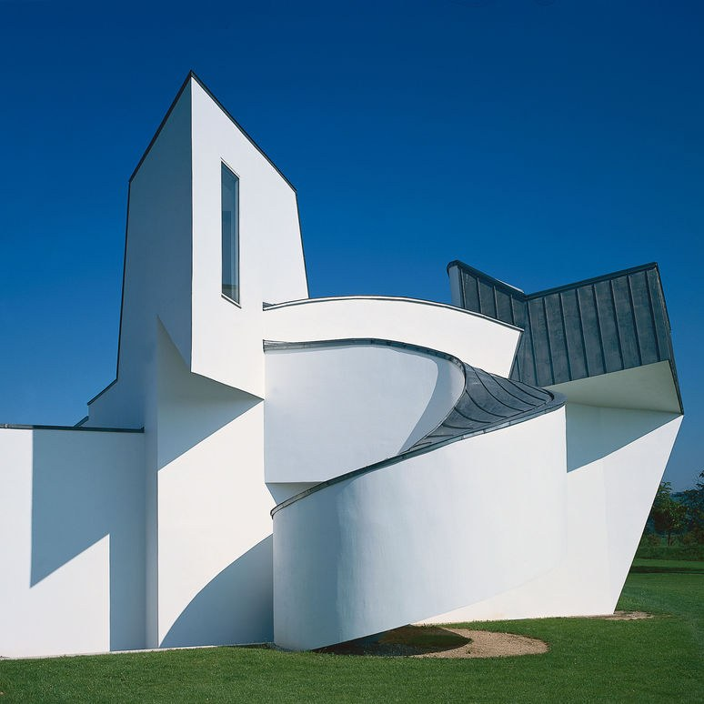
图：Frank Gehry 设计的 Vitra Design Museum 主楼（1989）——白色解构主义体块与锌皮屋顶。图源：Vitra Design Museum 园区页。
1993：Zaha Hadid 消防站
术语注释：解构主义——后现代建筑流派，以破碎、错位的体块反对古典秩序。
Zaha Hadid 的消防站 1991–1993 年设计建造，是她个人第一座建成作品：锯齿状混凝土体块沿道路展开，原本作为公司消防队驻地，消防队撤编后改为展览与活动空间。建筑以锋利的折面与倾斜墙面闻名，是 Hadid 参数化语言最早的实体呈现之一。
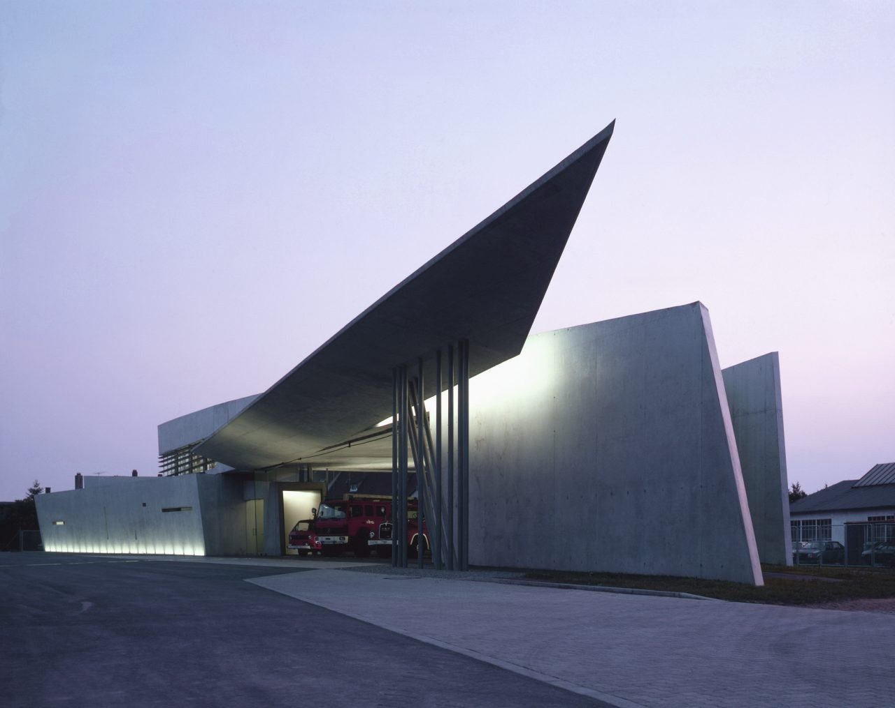
图：Zaha Hadid 消防站（1993）——锯齿状混凝土体块，建筑师首座建成作品。图源：Zaha Hadid Foundation。
1993：安藤忠雄会议中心
安藤忠雄的会议中心同年落成，是他在日本以外的首项作品：清水混凝土墙体、下沉庭院与光影处理，把东方极简的建筑语言带入园区。建筑与 Hadid 消防站相邻，两种截然不同的混凝土美学在园区内并置。
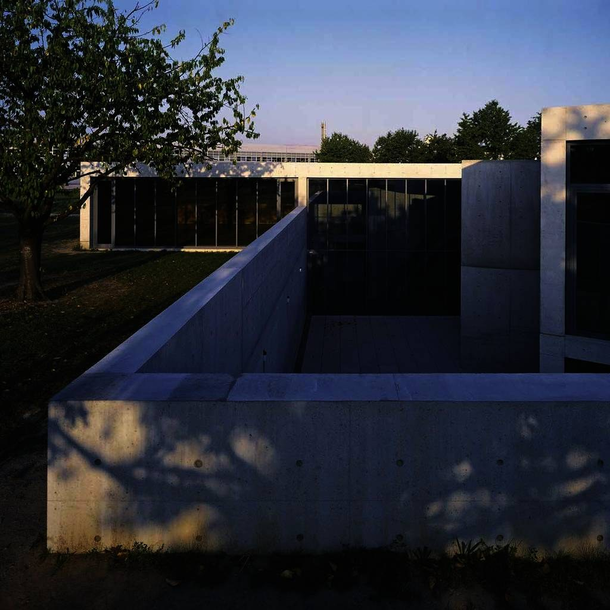
图：安藤忠雄会议中心（1993）——清水混凝土与下沉庭院，建筑师日本以外首作。图源：Vitra Design Museum 园区页。
2010：VitraHaus
Herzog & de Meuron 的 VitraHaus 2010 年落成，是品牌旗舰店：十二栋坡顶屋体堆叠穿插成五层，内部为 Home Collection 全系列展厅、Lounge Chair Atelier（定制工作室）、咖啡与博物馆商店。建筑以"村庄般堆叠的坡屋顶"回应魏尔当地建筑语言，同时构成园区面向访客的第一视觉界面。
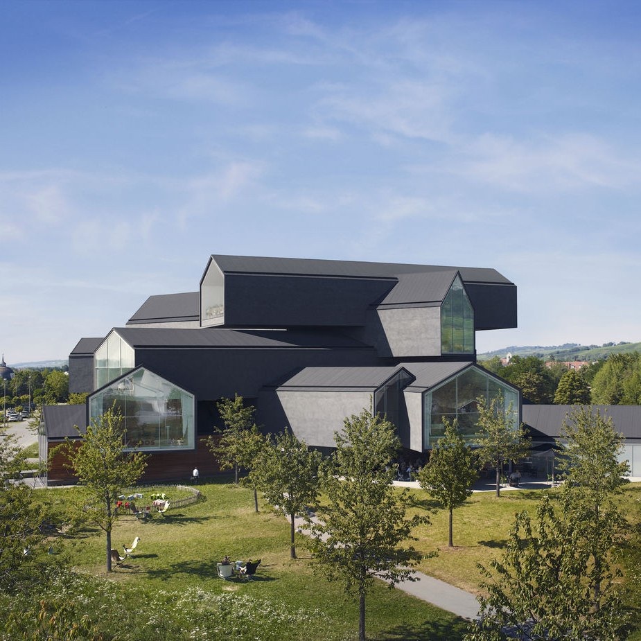
图：Herzog & de Meuron 设计的 VitraHaus（2010）——十二栋坡顶屋体堆叠的旗舰店形态。图源：Vitra Design Museum 园区页。
2012：SANAA 厂房
SANAA（妹岛和世与西泽立卫）的 Vitrashop 厂房 2012 年落成：近圆形平面、白色波纹亚克力幕墙，内部为仓储与配送空间，并设 240 个地下车位。这是园区内最"轻"的一栋建筑，与 Gehry 的白色石膏体块形成材料与形态的双重对照。
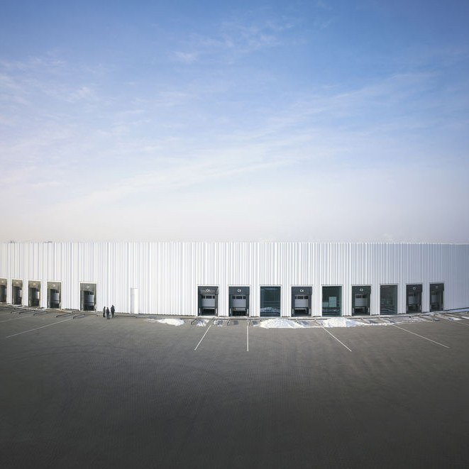
图：SANAA 设计的 Vitrashop 厂房（2012）——近圆形平面与白色波纹亚克力幕墙。图源：Vitra Design Museum 园区页。
2016：Schaudepot
术语注释：Schaudepot——德语"陈列库房"，此处指博物馆的常设展藏建筑。
Herzog & de Meuron 在园区的第二栋作品 Schaudepot 2016 年 6 月开馆：砖墙立面、约 1,600 平方米可用面积，是全球最大的当代家具常设展与研究库之一。博物馆约 7,000 件家具藏品以库房状态密集陈列，向公众开放，是"设计史肉身档案馆"的空间落点。
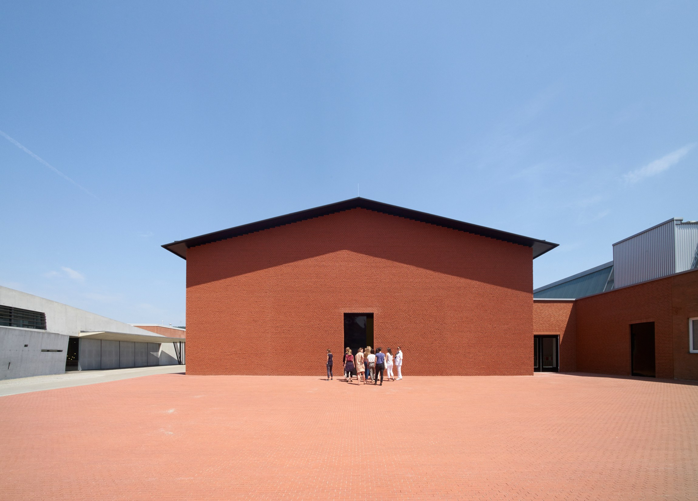
图：Herzog & de Meuron 设计的 Schaudepot（2016）——砖墙立面与常设家具展藏空间。图源：Herzog & de Meuron 项目页。
2022：筱原一男《Umbrella House》复建
2022 年夏，筱原一男 1961 年建于东京的《Umbrella House》在园区复建完成（2021 年 9 月开工）。这座木构小宅以中心伞状支柱承载悬挑屋顶，是筱原"小住宅"实验的代表作，原建筑拆除后由 Vitra 以档案方式在园区重建，延续园区"建筑收藏"的传统。
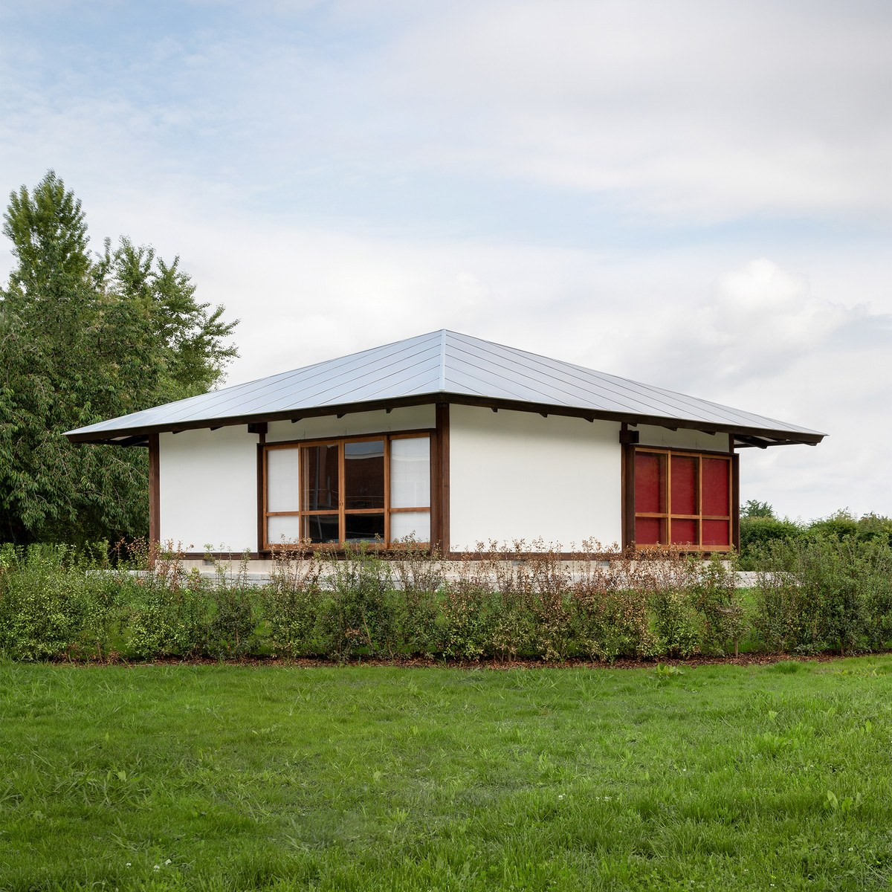
图：筱原一男《Umbrella House》（1961 年原作，2022 年园区复建）——伞状支柱与悬挑屋顶的木构小宅。图源：Vitra Design Museum 园区页。
2025：Doshi Retreat
Balkrishna Doshi 与 Khushnu Panthaki Hoof、Sönke Hoof 合作的沉思空间 Doshi Retreat 2025 年 10 月 25 日揭幕，是 Doshi 在印度以外的首座建成作品，也是他 2023 年去世前完成的最后一件作品：耐候钢曲面体量围合出一个冥想与休憩的空间，延续 Doshi 对"包容性建筑"的思考。至此，园区建筑年表从 1981 年的 Grimshaw 厂房延伸至 2025 年，覆盖三代建筑师的近半个世纪。
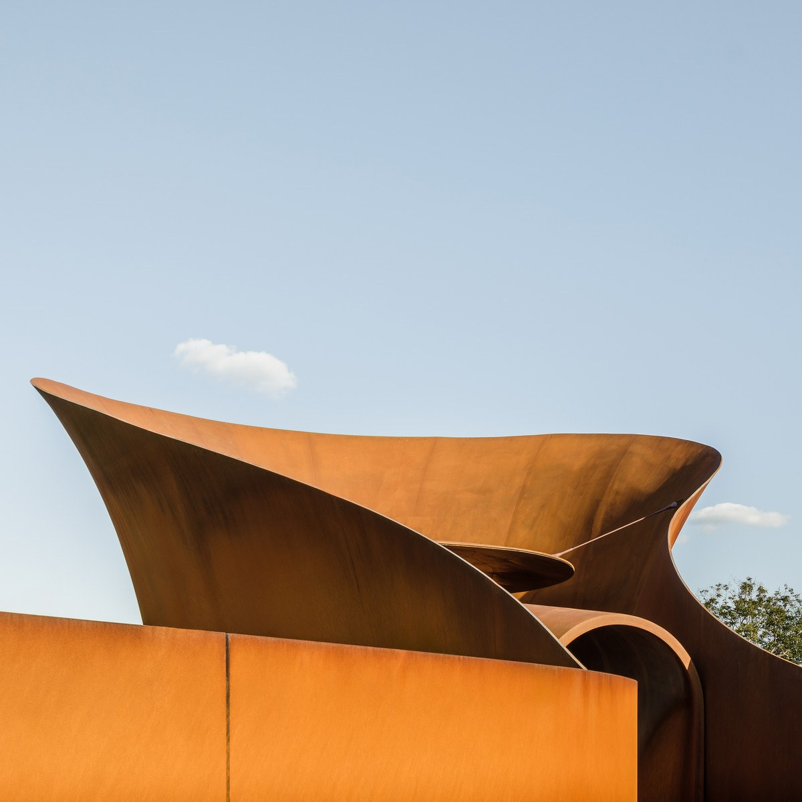
图：Balkrishna Doshi 遗作 Doshi Retreat（2025 年揭幕）——耐候钢沉思空间，建筑师印度以外首作。图源：Abir Pothi。
04 Category 品类与市场：经典再版与当代共创的双轨
品类定义与版权格局
Vitra 对外的真实品类是高端设计制造家具，横跨住宅（Home Collection）与办公/公共空间（Office & Contract）两端，商业模式是"授权再版 20 世纪设计经典＋与当代设计师合作新品"双轨。现行目录按五大块划分：休闲椅（9 个系列，含 Eames Lounge Chair、Grand Relax、Coconut、Cone 等）；沙发（29–43 个系列，含 Anagram、Suita、Polder、Marshmallow 等）；椅与桌（63 个系列，覆盖 Eames 塑料壳椅、钢丝椅、Panton、Standard、Vegetal、HAL、Wiggle、EM Table 等）；办公椅与办公桌（101–131 个 SKU 段，任务椅含 AC 5 Work、ACX、Allstar、Mynt 等）；配件（123–157 个 SKU 段，含 Nelson 时钟系列、Eames House Bird、Eames Elephant、微缩模型系列、Akari 灯等）。理解这套矩阵的前提是版权格局：Eames、Nelson、Girard 设计在欧洲与中东归 Vitra，其余世界归 Herman Miller；Nelson 时钟与微缩模型系列为 Vitra 全球独家；Eames Coffee Table 北美归 Herman Miller、Eames Dining Table 北美归 Knoll；意大利市场由 Molteni&C 分销。
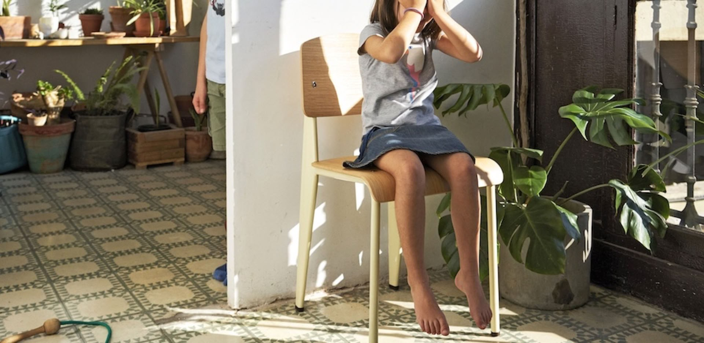
图：Jean Prouvé 的 Standard 椅（1934/1950）在室内场景中的形态——后腿粗壮、前腿纤细的结构语言。图源：MoMA Design Store。
价格带：2026 年 10 月官方与渠道实查
vitra.com 主站对自动抓取设限，官方挂牌价取自官网托管的价格表索引（含 VAT 建议零售价口径），经销商现行价作交叉验证。2026-10-26 实查要点：Eames Lounge Chair & Ottoman 欧区 €9,120 / 英区 £8,095（美国 Herman Miller 口径 $5,995 起）；Grand Relax & Ottoman €9,250；Polder Sofa（拼色面料版）€7,040；Suita Daybed €3,710；Eames 塑料壳椅 DSR €295、DAR €415；Wire Chair DKR €390–445（按色）；Panton Chair 聚丙烯款官方价目 USD 465（经销商 €365 左右）、Classic 聚氨酯款 €1,390；Standard 椅美区价目 USD 1,190；Ball Clock 博物馆商店 €335–435、英区价目自 £230；Eames House Bird 英区 £179；Eames Elephant（胶合板）美区 USD 2,110；LTR 茶几 €419。整体呈金字塔结构：配件与小件经典把入口拉低（£179–465 段），主力经典椅落在 €800–1,600，沙发与高背舱上探 €5,000–9,000，旗舰 Lounge Chair 与 Grand Relax 突破 €9,000。
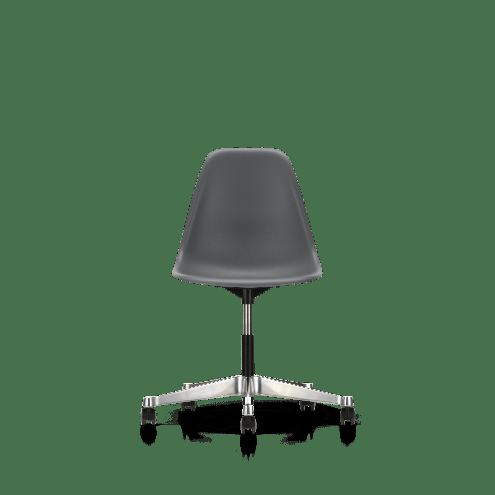
图：Eames Plastic Side Chair 聚丙烯壳办公转椅变体（灰色壳）——壳椅在办公场景中的形态。图源：Vitra 官方产品资料。
渠道结构
渠道分六路。一是官网与官方目录站：vitra.com 承担产品档案、设计故事与经销商导流（主站限制个人全量加购）；日本区有官方在线商城 store.vitra.co.jp 日元直营；findmy.vitra.com 提供 Office Chair Finder 与 Gift Finder 问卷式导购。二是旗舰店：VitraHaus 为官方旗舰店（Weil am Rhein），可试坐、咨询、订购全系列。三是博物馆商店：Vitra Design Museum Shop 与 Schaudepot Shop 双通道，售卖产品、配件、微缩模型与展览出版物。四是授权经销商网络：欧洲 smow、deplain、no-ga 等，美国经 Design Within Reach、Hive、MoMA Design Store 等。五是 B2B 合同渠道：办公线经销售办公室与经销商进入整层项目，北美销售办公室设于纽约、洛杉矶、旧金山、芝加哥。六是 Vitra Circle 官方翻新/循环渠道：门店位于布鲁塞尔、阿姆斯特丹（Zaandam）与魏尔园区，以划线价售翻新与展品件，附两年质保。中国市场：在华运营主体为珠海注册的 Vitra Furniture (Zhuhai) Co.，上海静安区常德路 800 号设渠道点；2025 年 6 月 Vitra 入驻天猫奢品，以 RIMOWA × Vitra 限量联名为首发；2026 年 9 月京东上海首店 101HOME（集合店，12,000 平方米）引入 Vitra、Herman Miller、Flos 等品牌组合。
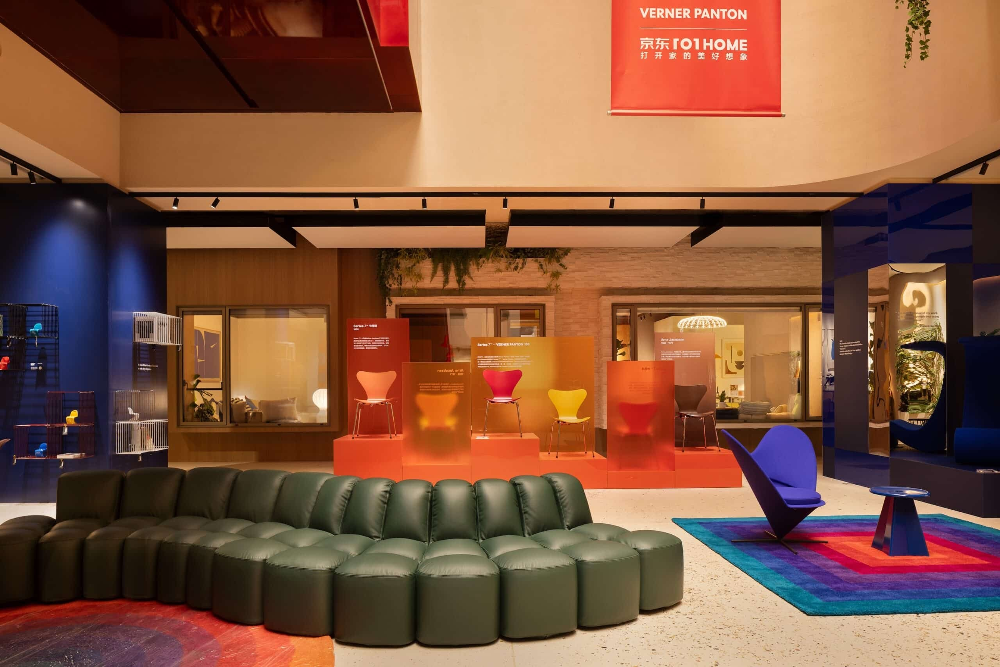
图：京东 101HOME 上海集合店（2026 年 9 月开业）——Vitra 在中国市场经由集合店渠道呈现。图源：京东官方博客。
05 User 用户与场景：设计史消费者
三方角色分离
Vitra 的买家结构呈"指定者、购买者、使用者"分离的典型高端制造特征：住宅端，购买者多为设计消费者与收藏型买家，使用者是家庭；办公合同端，指定者为建筑师、室内设计师与采购，使用者是员工与访客；博物馆与展陈端，策展人决定馆藏购藏，普通访客在商店转化为购买者。官方博物馆商店的微缩模型系列是"非家具用户"的入口——1:6 比例重现 Eames Lounge、Panton、Vegetal 等经典，单价约 100–160 欧元，把经典设计转化为礼物经济。

图：Schaudepot 常设展主厅——约 7,000 件家具藏品以库房状态密集陈列，访客在展藏与商店之间完成从观看到购买的转化。图源：Vitra Design Museum 展藏页。
JTBD 与 CEP：被雇来做的事
| 作业任务（JTBD） | 核心体验承诺（CEP） | 对应产品/机制 |
|---|---|---|
| 我要一件能代表"我有设计判断力"的客厅单品 | 一件"设计史教科书"级别的椅子，越旧越经典 | Eames Lounge Chair（1956）、Polder Sofa（2005） |
| 我要给孩子或朋友一份有品味的礼物 | 经典造型＋适度价格＋可收藏性 | Ball Clock（1948 起）、Eames House Bird、微缩模型系列 |
| 我要为办公室配一把体面且耐用的椅 | 人体工学与 30 年质保的长期主义 | AC 5 Work（2017）、Allstar（2014） |
| 我要在紧凑空间里分隔出私密角落 | 可移动的"房间中的房间" | Alcove 家族（2006/2012/2021） |
| 我要给餐区/阳台买一把不落俗套的椅子 | 有机造型与室内外两用 | Vegetal（2008）、HAL（2010） |
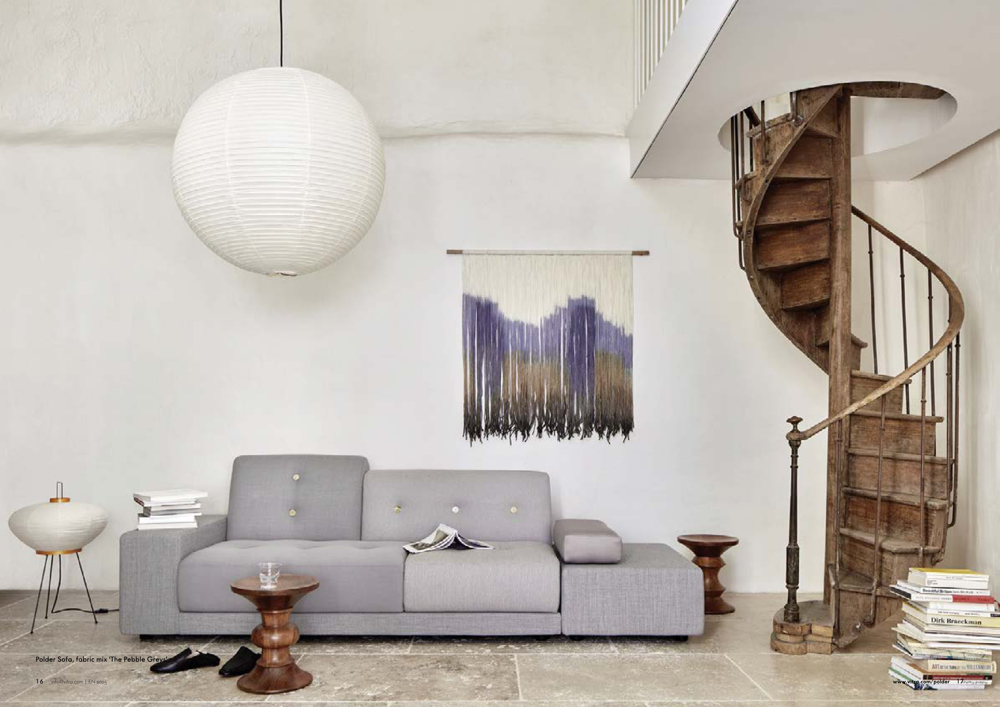
图：Hella Jongerius 的 Polder Sofa 在客厅场景中的不对称拼色形态。图源：Vitra 官方 Home Collection 快照。
价格敏感与替代逻辑
典型购买者的心理账户是"一次性投入、长期拥有"：Eames Lounge Chair €9,000 级的价格对应的是"可以传给下一代"的耐用叙事（官方称 Lounge Chair 生产至今仍沿用 70 年前的 47 道工序，其中多数必须手工完成），Aluminium/Soft Pad 全系 30 年质保把更换周期拉长到数十年。二级市场的存在强化了这种逻辑：Vitra Circle 官方翻新渠道、以及 Catawiki 等平台上的经典件流转，使家具具备"准资产"属性。礼品型消费者（Ball Clock £230、House Bird £179、微缩模型）则用低单价完成"设计品味"的表达。

图：Vitra Circle 官方翻新门店（荷兰 Zaandam）——展品与错发货件经检测翻修后附两年质保再售，是家具"准资产"流转的官方通道。图源：Vitra Circle 阿姆斯特丹/荷兰官方页。
使用场景地理
欧洲（德、法、英、瑞士、北欧）是经典再版的基本盘，办公合同渗透率高；美国市场以 Eames 授权（Herman Miller 制造）与 Vitra 当代线并存；亚洲方面，日本是 Vitra 除欧美外唯一设有官方在线商城、且以日元直营的市场，store.vitra.co.jp 覆盖全产品线；中国仍处渠道早期，以集合店与线上旗舰店触达高净值用户，核心卖点是"原版欧洲制造"与设计史背书。
06 Positioning 定位：博物馆级的设计家具制造商
参照系
直接参照系是高端设计家具品牌：Herman Miller（美国，Eames 版权的主要持有方）、Knoll（美国）、Cassina（意大利）、Molteni&C（意大利）、Artek（芬兰，2013 年并入 Vitra 集团），以及北欧当代品牌 Hay、Muuto 等。间接参照系是办公家具巨头 Steelcase、Haworth（以合同市场为主，设计权重低）。Vitra 的差异在于"博物馆＋工厂"一体化：既有独立设计史博物馆（约 20,000 件藏品、出版《Atlas of Furniture Design》研究图鉴），又有自营生产与园区建筑群，这在同行中独一无二。
差异点与共同点（POD/POP）
| 差异点（POD） | 证据与机制 | 共同点（POP） | 证据与机制 |
|---|---|---|---|
| "作者"制度与设计史载体 | 官方称设计师为"作者"；目录同时覆盖 20 世纪大师与当代作者，产品即设计史切片 | 人体工学与舒适承诺 | 办公椅线 AC 5、Allstar、Softshell 均强调健康坐姿与软垫工艺 |
| 博物馆级馆藏背书 | Vitra Design Museum 1989 年开馆、馆藏约 20,000 件；Eames Lounge、Panton Chair 等入 MoMA 馆藏 | 渠道与可达性 | 官网、官方商城、经销商、旗舰店、Circle 翻新五路并存 |
| 经典+当代双轨与 30 年质保 | Aluminium/Soft Pad 全系 30 年质保；Panton Chair 五代材料迭代持续在产 | 可持续叙事 | GREENGUARD Gold、EPD、FSC 认证与再生材料导入 |
| 园区建筑资产 | Gehry/Hadid/安藤/SANAA 等建筑群，Philip Johnson 评价为"自魏森霍夫展以来西方最杰出建筑师的最大聚集" | 高端定价 | 主力椅 €800–1,600、旗舰沙发 €5,000–9,000 |
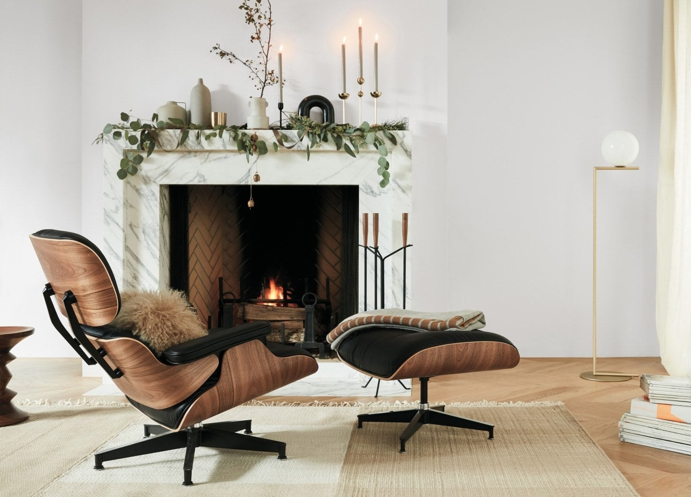
图：Eames Lounge Chair & Ottoman（1956）——MoMA 设计馆藏著录对象，型号 670/671。图源：MoMA 馆藏页。
承诺链
一句话承诺："它是欧洲设计与 20 世纪设计史的正典制造者。"支撑链条：设计史研究（博物馆、Atlas 图鉴）→ 授权与版权（1984 分治的欧洲与中东权益）→ 制造（自营德国/匈牙利/芬兰/日本工厂、47 道手工工序、30 年质保）→ 体验（园区、旗舰店、导览、Circle 循环）。这条链的每一环都能被第三方验证：版权看 Herman Miller/Eames Office 官方声明，制造看 Production Tour 与 EPD，馆藏看 MoMA 与博物馆著录——品牌的"可信度"由外部机构背书而非自说自话。
07 Product 产品：从 Eames 到 Bouroullec 的设计史切片
Eames Lounge Chair & Ottoman（Charles & Ray Eames，1956）
Charles 与 Ray Eames 夫妇 1956 年设计，型号 670/671，是"放松与精致"的代表作：三段独立模压胶合板弯壳（头、背、座）构成连续曲面，压铸铝底座与五角星脚，软垫采用可回收聚氨酯泡沫（新版 V-Foam），底座含 95% 消费后回收铝，木皮可选美洲樱桃、欧洲樱桃、Santos 玫瑰木与自然胡桃，取自 FSC 认证林管。设计契机是 Eames 夫妇想为演员 Billy Wilder 做一把"像旧棒球手套一样合身"的椅子；官方称其生产至今仍沿用 70 年前的 47 道独立工序，多数必须手工完成。MoMA 1956 年即收入馆藏（作品编号 3325），成为"20 世纪经典客厅椅"的标准像。2026-10-26 实查：欧洲官方建议零售价 €9,120、英国 £8,095。
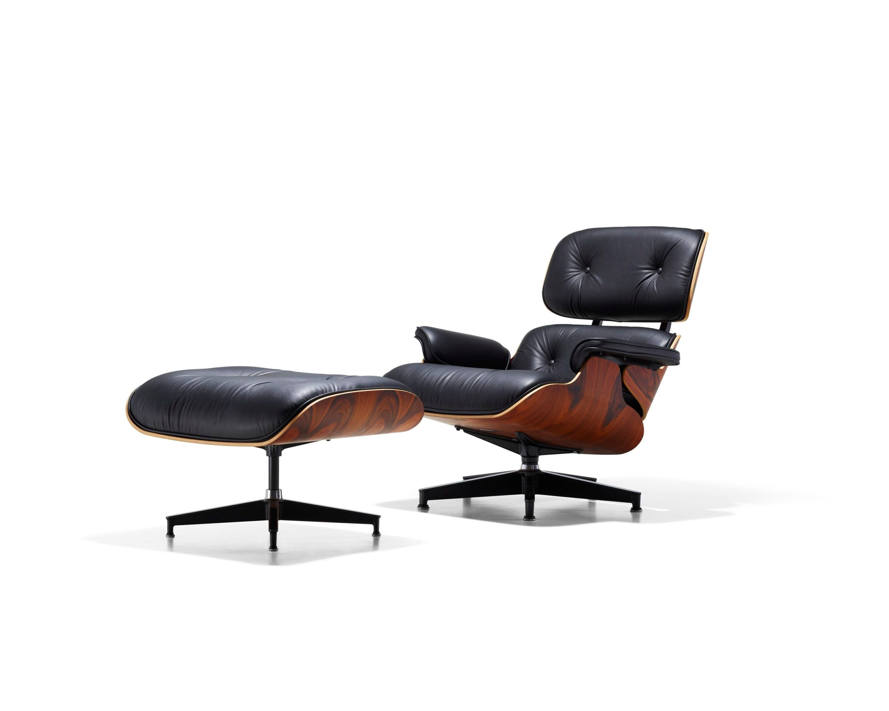
图：胡桃木皮版 Eames Lounge Chair & Ottoman——三层胶合板弯壳与五角星铝底座。图源：Herman Miller 官方产品页。
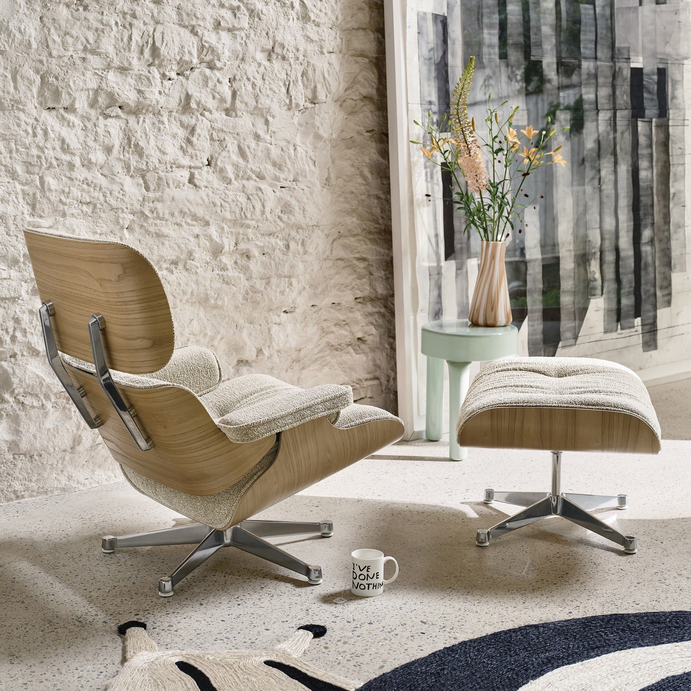
图：Eames Lounge Chair 在客厅场景中的使用形态。图源：Vitra 官方产品页。
模压胶合板椅：LCW 与 DCM（1945/1946）
LCW（Low Chair Wood，1945 年设计、1946 年首展，MoMA 称其为"世纪之椅"）与 DCM（Dining Chair Metal，1946 年首产，MoMA 作品编号 2298）是 Eames 夫妇把"模压胶合板"推向量产的关键作品：加热压板之间以热固树脂粘合多层木皮，座面与靠背五层、腿与脊柱九层。LCW 无扶手，五腿木脚；DCM 以钢棒支腿配胶合板座背，是"木与钢"的结构组合。它们确立了"三维曲面胶合板壳＋极简支腿"的范式，1946 年 MoMA"低成本家具设计"竞赛展中公开亮相。现行版本沿用当年工艺逻辑，配黑色或自然木皮。
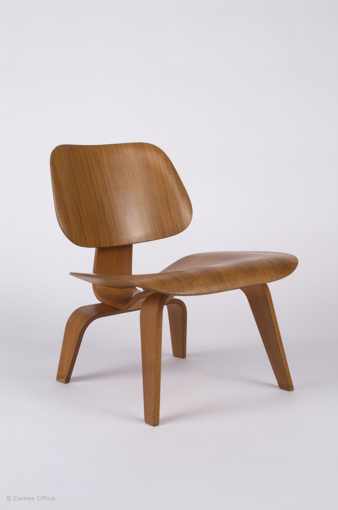
图：LCW 模压胶合板椅的曲面细节——五层木皮热压成型。图源：Eames Office 工艺页。
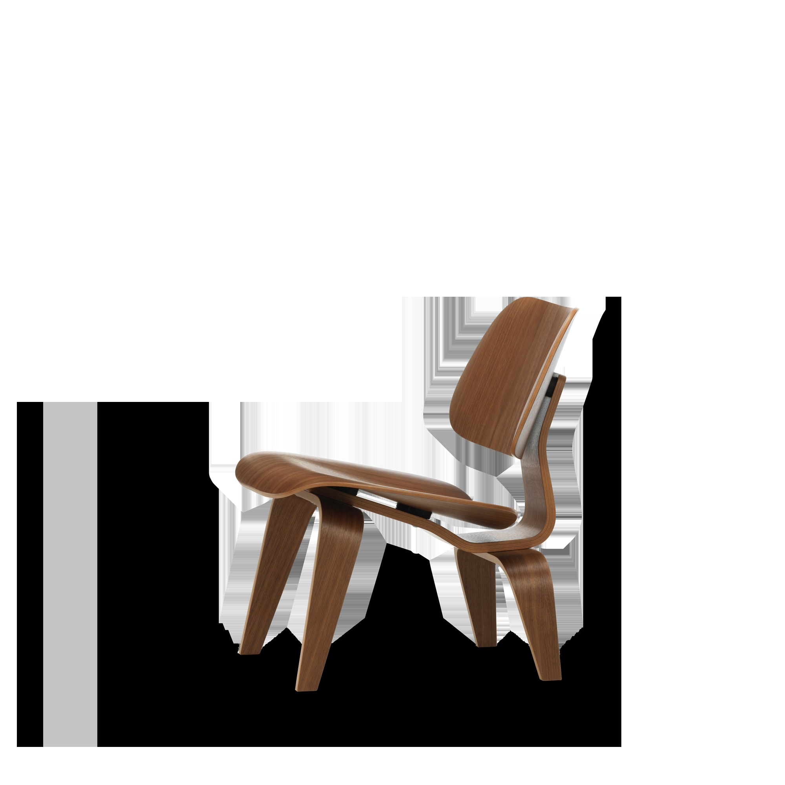
图：LCW 正面形态——无扶手、五腿木脚的"世纪之椅"。图源：MoMA 馆藏页。
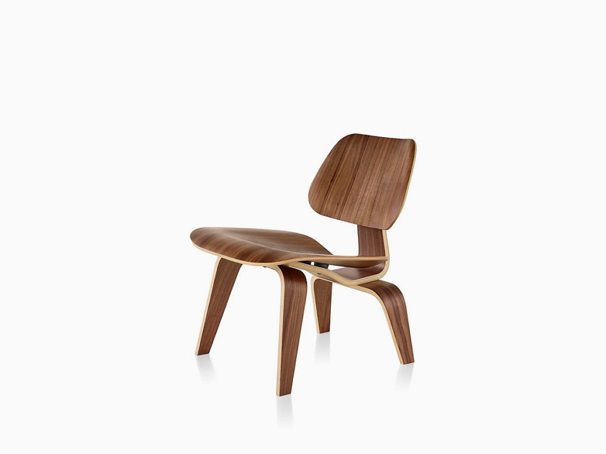
图：胡桃木皮 LCW 在室内场景中的形态。图源：Vitra 官方产品页。
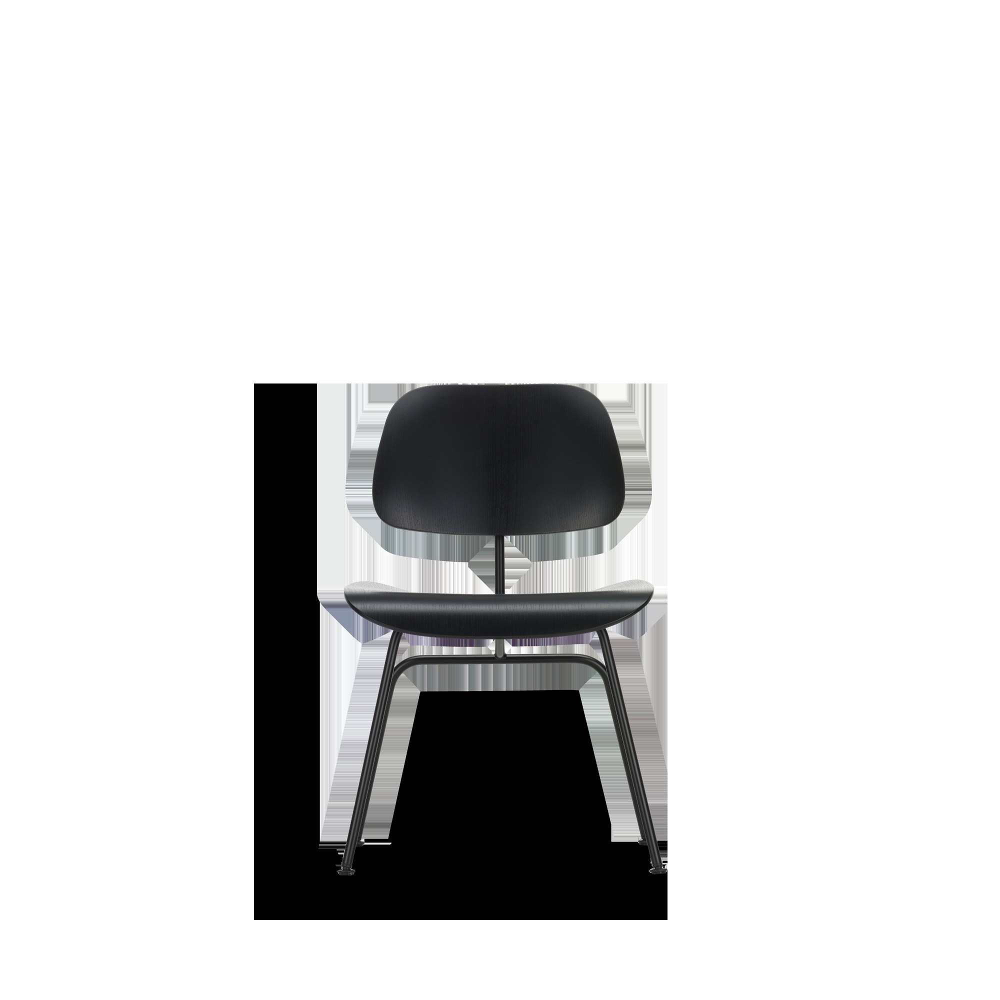
图：DCM 餐椅正面——钢棒支腿配胶合板座背。图源：Vitra 官方产品页。
La Chaise（1948 设计，1990 年代量产）
La Chaise 1948 年由 Eames 夫妇为 MoMA 低造价家具竞赛设计，名字致敬法国雕塑家 Gaston Lachaise 的《漂浮雕塑》，造型如云朵般起伏：单曲面玻璃钢/聚酯壳配黑色弧形管腿，横向轮廓极长。1948 年原型由 MoMA 收藏（作品编号 2133）；商业量产迟至 1990 年代，由 Vitra 以玻璃纤维增强聚酯投产——Eames Office 官方声明：La Chaise 的全球生产权在 Vitra。它从"竞赛原型"到"量产经典"的 40 余年路径，是 Vitra 再版逻辑的标本。
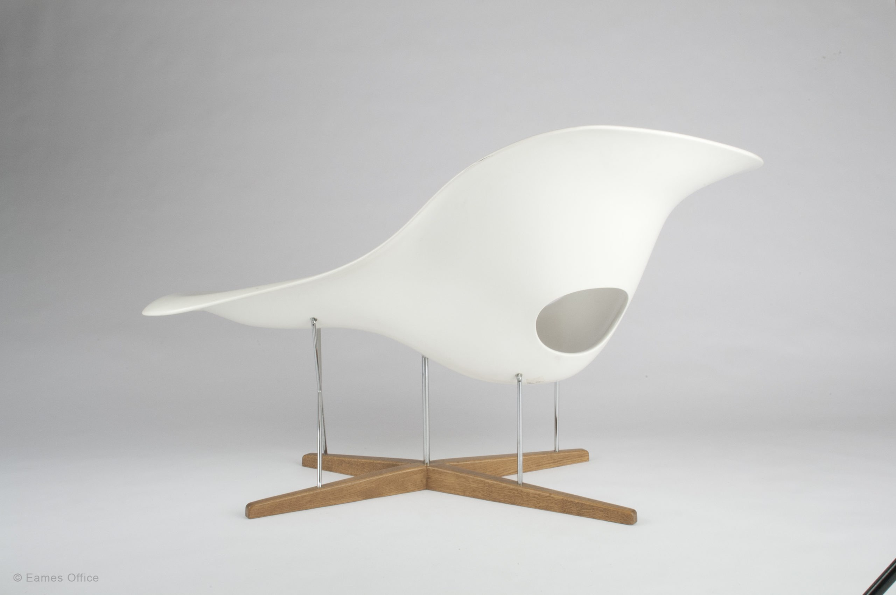
图：La Chaise（1948 设计）——云朵般起伏的单曲面玻璃钢壳。图源：Vitra 官方产品页。
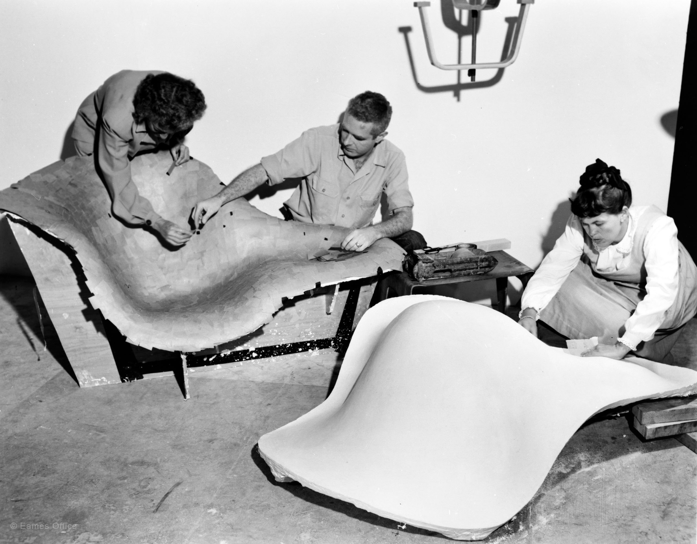
图：La Chaise 壳体的模制过程——玻璃纤维增强聚酯的冷模成型。图源：Vitra 官方工厂资料。
钢丝椅与塑料壳椅（1950/1951）
Eames 夫妇 1950 年推出第一批工业化量产的塑料壳椅（RAR/DAW/DAX 等，玻璃钢增强聚酯），1951 年推出钢丝椅（Wire Chair，金属丝网座壳配不同支腿，DKR 为钢丝餐椅、DNW 为摇椅）。钢丝椅把"线"作为材料，座壳由金属丝网焊接成型，配镀铬或黑色喷粉表面，坐感靠弹性网面提供。塑料壳椅至今仍在产：现行版本为聚丙烯注塑，2024 年起切换为 100% 消费后再生塑料（PCR），且再生料本身 100% 可回收；底盘因人体平均身高增长而加高 20 毫米。两者共享"壳＋腿"的 Eames 系统逻辑，覆盖餐椅、扶手椅、摇椅、长椅全家族。2026-10-26 实查：DSR 塑料壳餐椅 €295、DAR €415、Wire DKR €390–445。
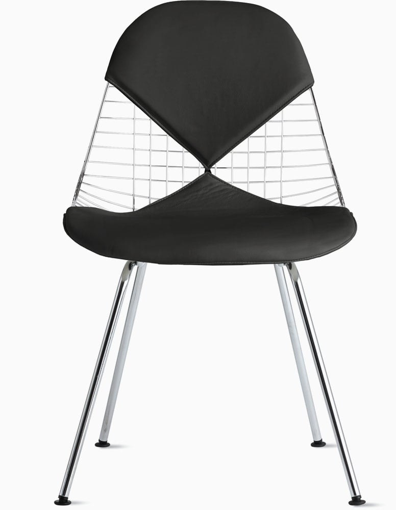
图：Eames Wire DKR 钢丝椅（1951）——金属丝网座壳配黑色喷粉支腿。图源：Vitra 官方产品页。
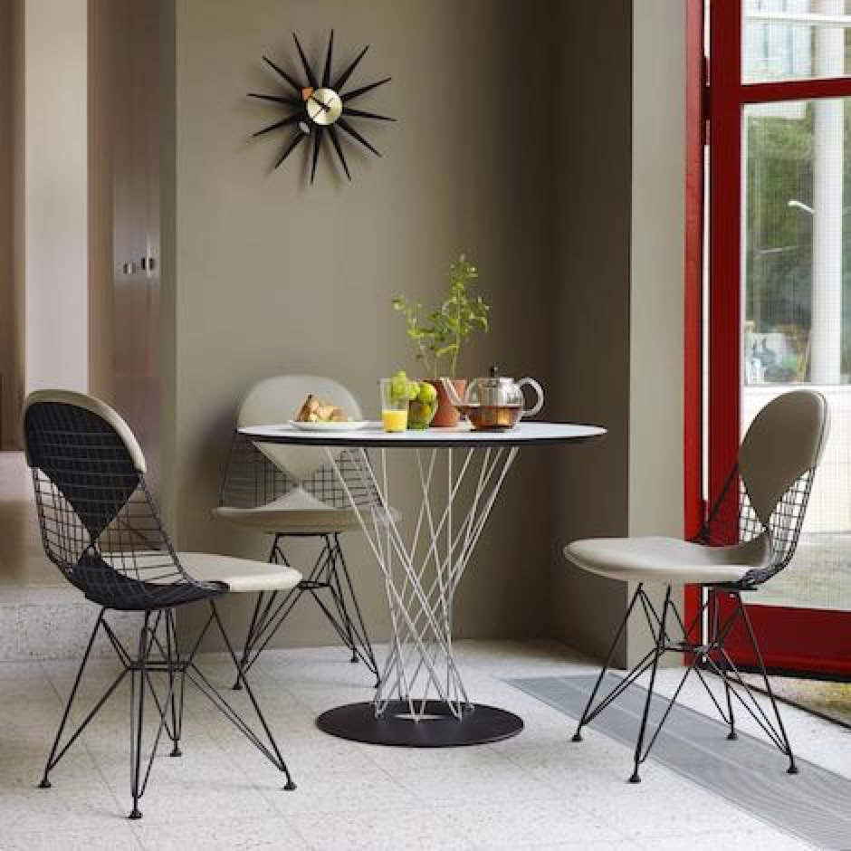
图：钢丝椅在餐区场景中的组合形态。图源：Vitra 官方产品页。
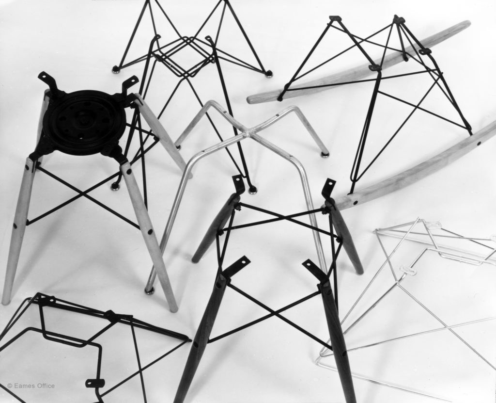
图：Eames 塑料壳椅的多种底座配置（摇椅底、钢丝腿、木腿）。图源：Vitra 官方产品页。
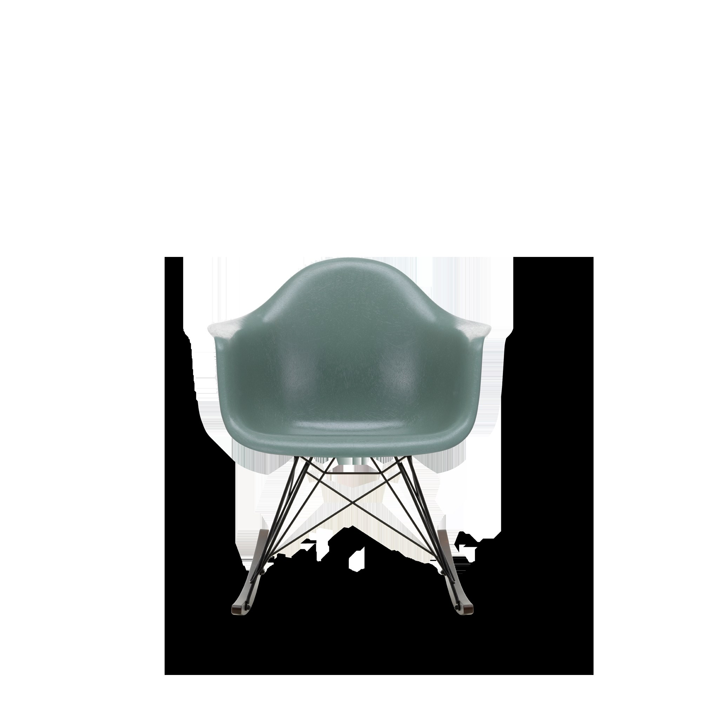
图：Eames RAR 摇椅（绿色玻璃钢壳配金属摇杆底座）。图源：Vitra 官方产品页。
George Nelson：椰子椅与棉花糖沙发（1955/1956）
术语注释：George Nelson——美国设计师（1908–1986），Herman Miller 设计总监，Vitra 再版其时钟与家具系列。
George Nelson 的 Coconut Chair（1955，官方 factsheet 口径；Vitra 1988 年再版）以椰子切面的八分扇面为原型，三条钢腿承托贝壳状单曲面座壳，是"雕塑感座椅"的代表。Marshmallow Sofa（1956）把 18 个圆形软垫以镀铬钢架串联成条，单个垫可拆卸更换，是"模块化圆盘"的极端实验。两件都是 1950 年代美国"原子时代"乐观主义的产品化表达，现行由 Vitra 以原版形态再版。
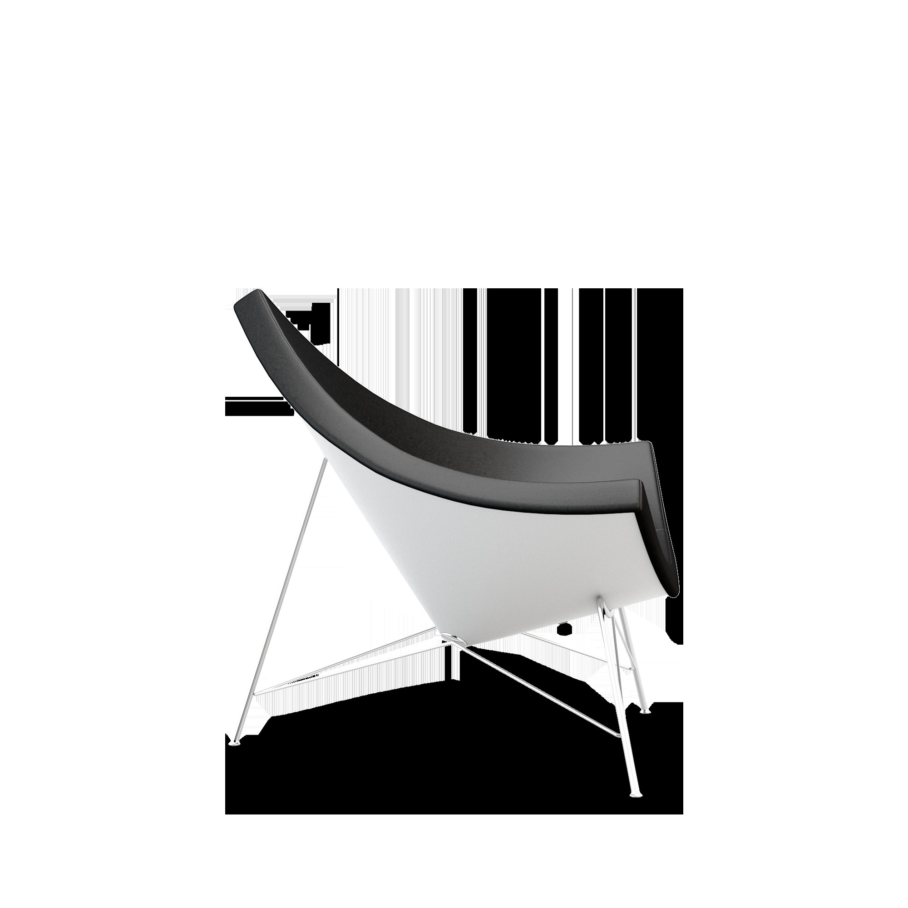
图：George Nelson 椰子椅（1955）——八分扇面座壳与三腿结构。图源：Vitra 官方产品页。
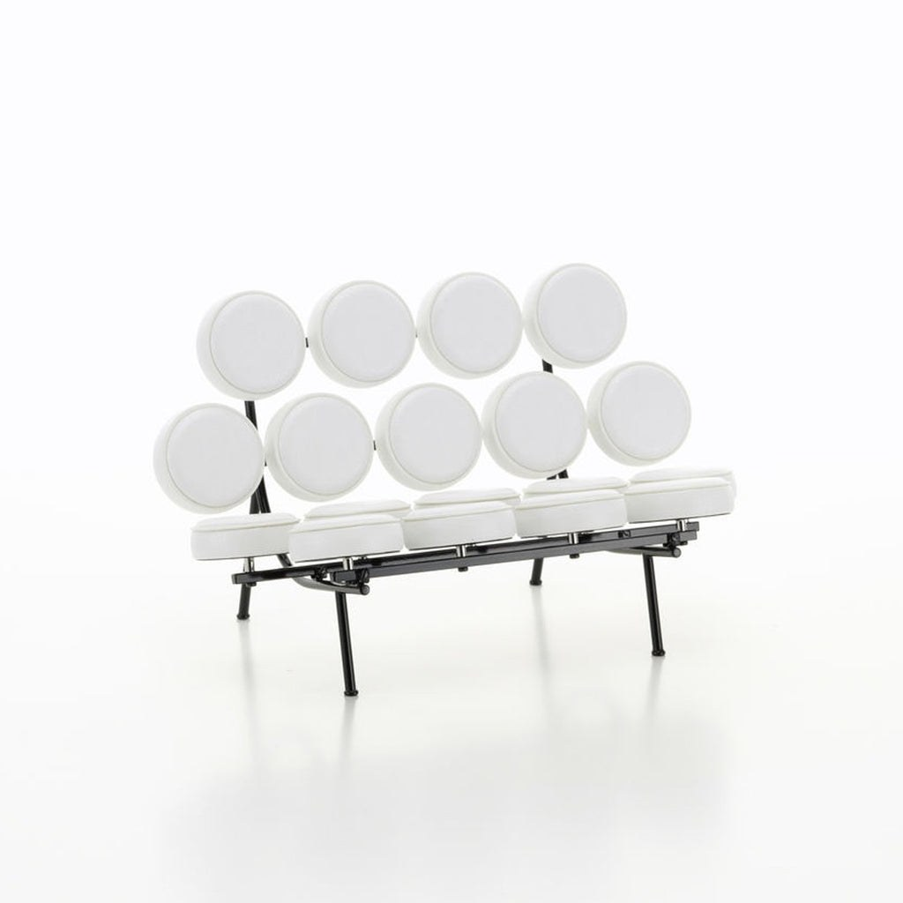
图：George Nelson 棉花糖沙发（1956）——18 个圆形软垫串联的镀铬钢架。图源：Vitra 官方产品页。
George Nelson 时钟系列（1948–1960）
Nelson 于 1948–1960 年间设计了一系列墙钟（Ball Clock、Sunburst Clock、Spindle Clock、Cone Clock 等），把钟面当作形式实验的载体：Ball Clock（1948/49）以彩色木球与金属棒构成钟面，1999 年起由 Vitra 再版；现行产品线含复古木球、黄铜、星芒等版本。这一系列是"设计史入门礼物"的经典标的，时钟与微缩模型系列为 Vitra 全球独家权益。2026-10-26 实查：Design Museum Shop 挂钟 €335–435，英区价目自 £230。
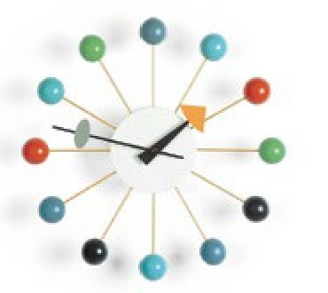
图：George Nelson Ball Clock（1949）——彩色木球与金属棒构成的钟面。图源：Vitra 官方产品页。
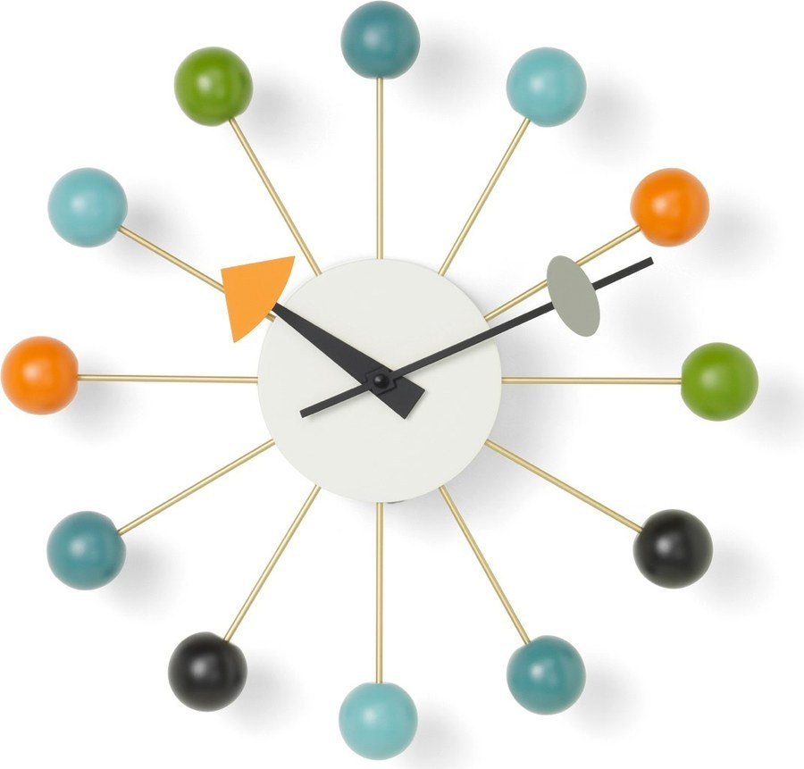
图：Ball Clock 挂墙场景——时钟系列在当代空间中的呈现。图源：Vitra Design Museum Shop。
Eames House Bird：不是钟的鸟
Vitra 目录中常被误认为"Nelson 鸟钟"的物件，实为 Charles & Ray Eames 设计的 Eames House Bird（黑鸟摆件，非钟、非 Nelson 作品）。这只木鸟源于 Eames 夫妇 1950 年代为好友挑选的装饰品原型，1950 年代在 Eames House 客厅茶几上出现于多张著名照片，Vitra 以木材复刻为摆件系列。它说明 Eames 夫妻档的创作不止于椅子——物件、玩具与雕塑同样是其世界观的组成部分。2026-10-26 实查：英区官方价目 £179。
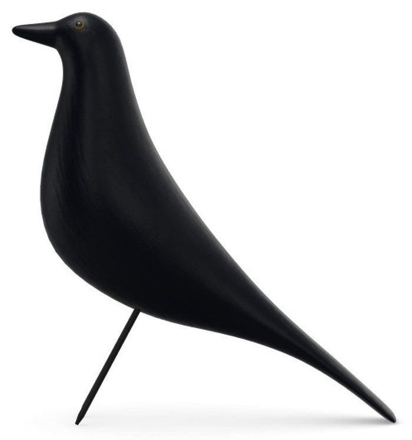
图：Eames House Bird 黑鸟摆件——Eames 夫妇作品，常被误认为"鸟钟"。图源：Vitra 官方产品页。
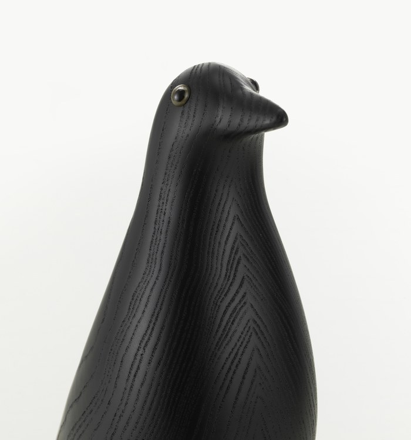
图：Eames House Bird 的木雕细节与底座。图源：Eames Office 官网。
Panton Chair（Verner Panton，1967 量产）
术语注释：Verner Panton——丹麦设计师（1926–1998），以一体化塑料座椅与波普色彩闻名。
Verner Panton 1957 年起为"史上第一把一体成型悬臂塑料椅"画草图，1960 年代定型，1967 年 8 月由 Vitra 前身公司量产。它只有一张连续的 S 形表面，无腿无扶手，材料沿革本身就是一部塑料工业史：1967/68 玻璃钢增强聚酯（冷模成型后喷漆）→ 1968 硬质聚氨酯泡沫（PU）→ 1971 苯乙烯共聚物 Luran S（1979 年因断裂隐患停产，断市逾十年）→ 1990 年代防碎 PU 复产（1999 年起称 Panton Chair Classic，通体着色后喷漆）→ 1999 年通体着色聚丙烯（PP）注塑版（可堆叠，面向大众价格带）。现行同时生产 PP 版与 Classic 版，2026 年推出 Panton 百年限量版 Electric Blue。官方 2026 价目：PP 版 USD 465、Classic 版 €1,390。它被 MoMA 收藏（著录为 Stacking Side Chair，1959–60，1969 年入藏），是"一件家具即一段材料史"的样本。
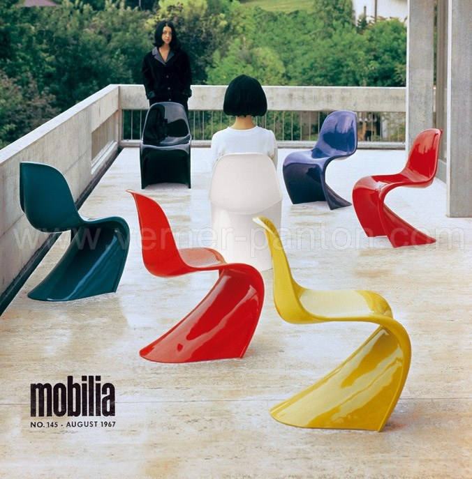
图：Panton Chair 彩色版本——一体成型悬臂塑料椅的 S 形轮廓。图源：Verner Panton 官方资料。
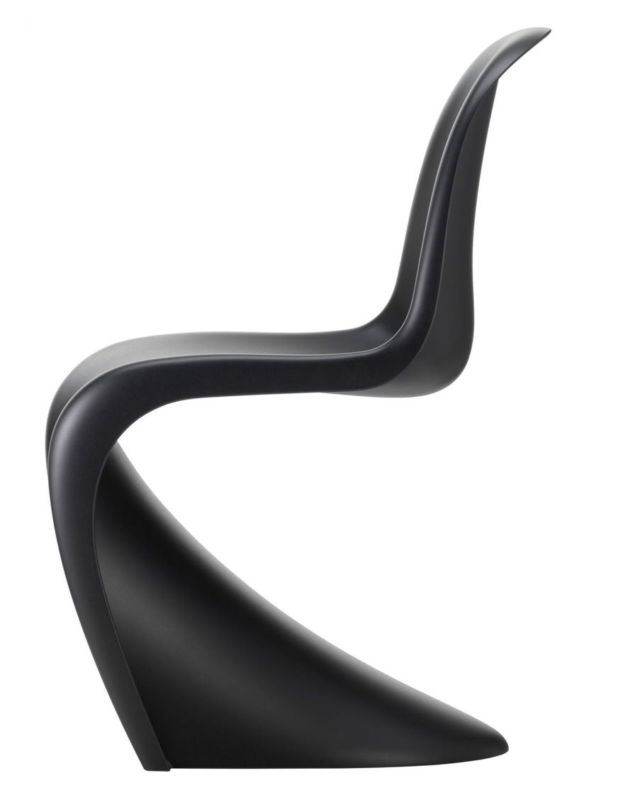
图：Panton Chair 聚丙烯注塑版（黑色）——1999 年起的大众价带版本。图源：Vitra 官方产品页。
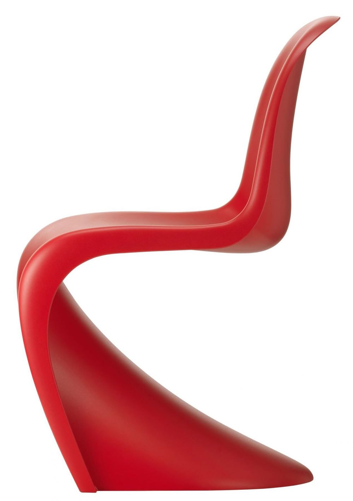
图：Panton Chair 聚丙烯注塑版（红色）场景。图源：Vitra 官方产品页。
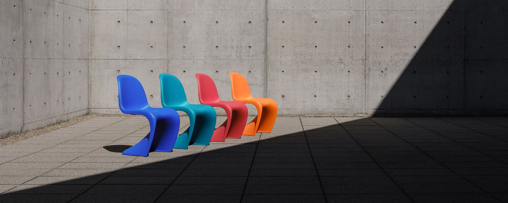
图：Panton Chair Limited Edition 2026 "Electric Blue"——Verner Panton 百年纪念限量版。图源：Vitra 日本官方商城。
Jean Prouvé：Standard、EM 桌与 Compas Direction（1934/1950）
术语注释：Jean Prouvé——法国工程师兼设计师（1901–1984），以钢构与"承重逻辑外露"的家具著称。
Prouvé 的 Standard 椅（1934 年设计、1950 年投产）以后腿粗壮承重、前腿纤细的"结构诚实"闻名：后腿以空心钢管与座面连接，充当整把椅的受力脊柱；EM Table（约 1950，源自 Prouvé 为法属殖民地项目设计的家具）以胶合板桌面配金属弯腿；Compas Direction 桌（1953）以三腿罗盘式结构承托圆形桌面，桌腿外张如圆规。Prouvé 的家具原则是"形式来自结构计算而非装饰"，与 Eames 的"曲面壳"路线构成 Vitra 经典目录里两条并行的现代主义支流。2026-10-26 实查：Standard 椅美区价目 USD 1,190；Antony 椅 2025 年推出限量版。
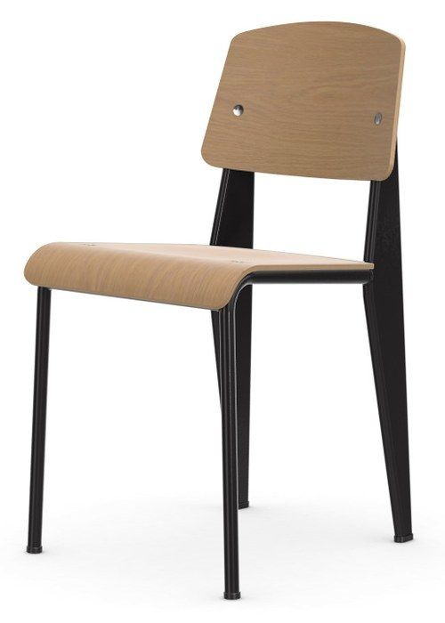
图：Jean Prouvé 的 Standard 椅（1934/1950）——后腿粗壮、前腿纤细的承重逻辑。图源：Vitra 官方产品页。
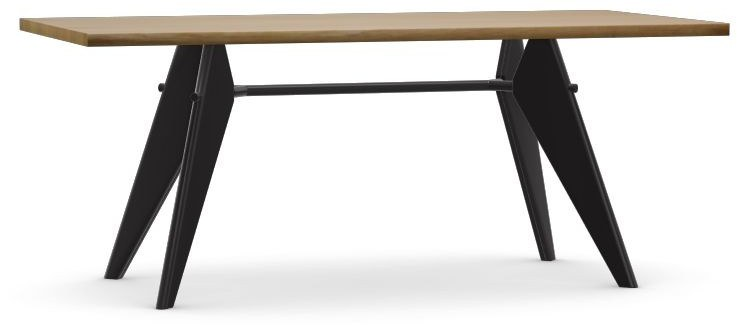
图：EM Table（约 1950）桌腿与桌面的连接细节。图源：Vitra 官方产品页。
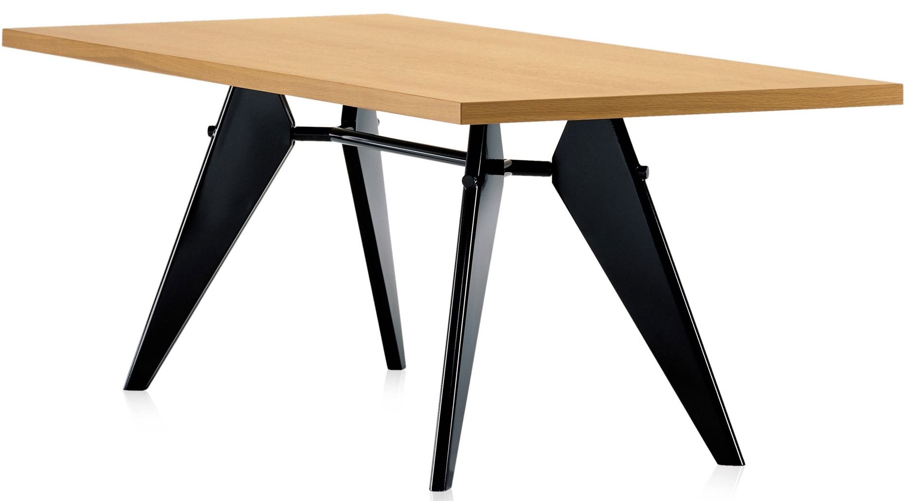
图：EM Table 橡木桌面配金属弯腿的整体形态。图源：Vitra 官方产品页。
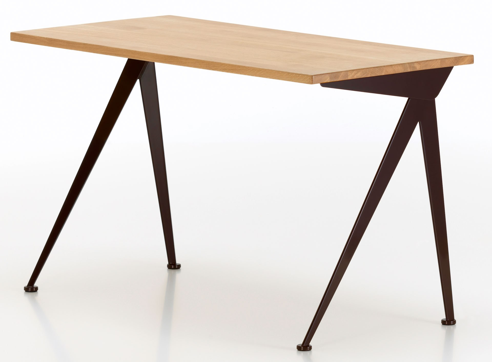
图：Compas Direction 桌（1953）——三腿罗盘式结构外张如圆规。图源：Vitra 官方产品页。
Vegetal（Ronan & Erwan Bouroullec，2008）
术语注释：Ronan & Erwan Bouroullec——法国设计师兄弟，1999 年起与 Vitra 合作的"作者"之一。
Vegetal 椅的开发始于 2004 年（Bouroullec 兄弟为 Vitra 做 Algues 空间隔断时，从注塑试模中萌生"像植物一样从不对称枝杈中生长"的想法），2008 年设计定稿并发布，2009 年进入博物馆馆藏（Cooper Hewitt 与费城艺术博物馆）。椅身由枝杈状构件向上弯曲围合出座面与靠背，通体染色聚酰胺一次注塑成型，四腿底座、可三把叠放、室内外两用；官方称注塑工艺高能效、材料 100% 可回收，发布时被称为"Vitra 迄今制造过的技术难度最高的椅子"。设计灵感来自英国铸铁花园长椅、美式乡村椅子与 19 世纪把幼树绑扎造型的园艺技术——把"植物"直接做成椅子。设计：Ronan & Erwan Bouroullec，2008。
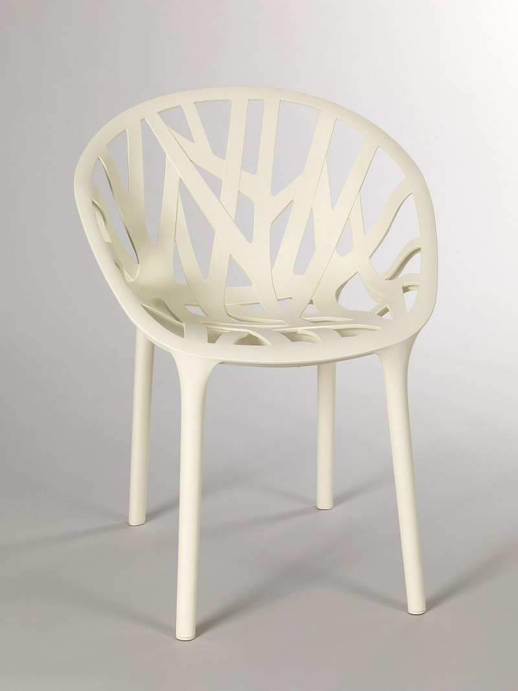
图：Vegetal 椅（2008）——通体染色聚酰胺注塑的枝杈状椅身。图源：Cooper Hewitt 馆藏页。
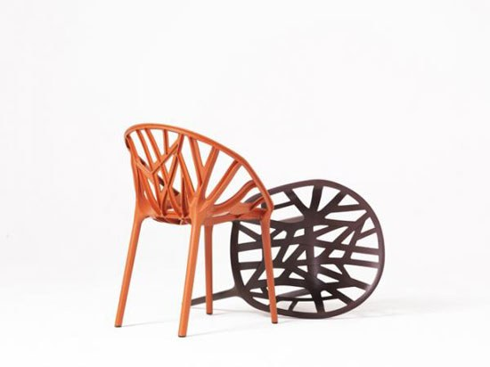
图：Vegetal 椅可三把叠放的结构与户外场景。图源：Vitra 官方产品资料。
Alcove：房间中的房间（2006/2012/2021）
Ronan & Erwan Bouroullec 2006 年以"可移动的微建筑构件"想法发展出 Alcove 沙发家族，官方口径称"房间中的房间（room in a room）"是两人与 Vitra 多年共同推进的概念。Alcove Highback Work 与 Alcove Cabin 为 2012 年推出（Cabin 2021 年改版扩展），Alcove Plume Contract 为 2015 年。结构上，侧/背板为软垫包布面板（Highback 版近 1.5 米高），提供视觉与声学遮蔽；框架为喷粉涂层钢，无外露管状结构；Cabin 四面围合、仅一处开口，可容纳 2–4 人（超高侧板版 4–6 人），内部可配桌板与电源成为完整工位。薄型面板在高效利用空间的同时邀请使用者倚靠软垫表面。
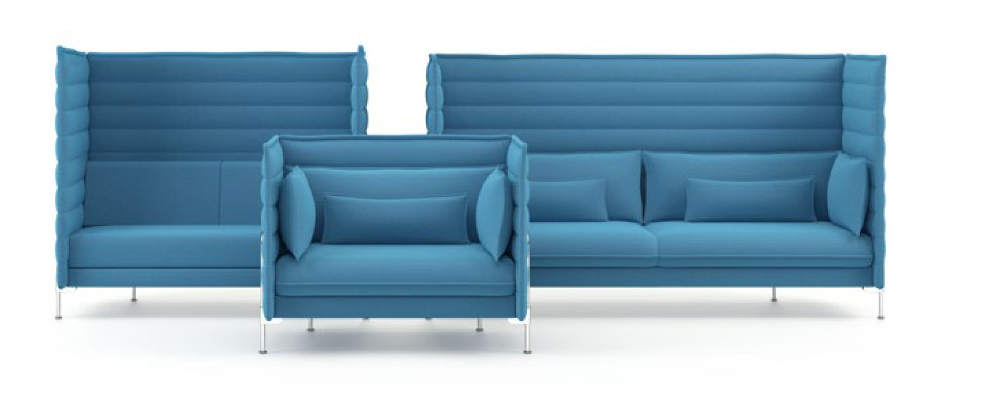
图：Alcove Highback 沙发（2006 起）——近 1.5 米高软垫侧板的围合形态。图源：Vitra 官方 factbook。
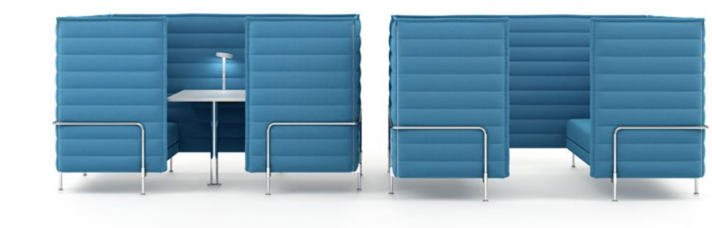
图：Alcove Cabin（2012/2021）——四面围合、带桌板与电源的完整工位。图源：Vitra 官方 factbook。
Slow Chair 与 Slow Sofa（2006/2025）
Slow Chair & Ottoman（2006）与 2025 年加入家族的 Slow Sofa，是 Bouroullec 兄弟"把丝袜绷在一件家具上"想法的产物：一件能随不同坐姿贴合身体的躺椅，而非把使用者塞进固定造型。2025 年版本提供轻质透明针织网套或软质 Flocca 面料织物版，面料套可拆，官方强调为长寿命而设计；Slow Sofa 以纤细框架与无厚垫结构在紧凑尺寸内留出宽敞座面。2023 年起兄弟二人转入各自独立项目，但 2025 年 Slow Sofa 仍以联名署名发布。官方 Home Stories 价目册：Slow Chair & Ottoman（Tricot 面料）€4,590；Vitra Circle 官方折扣店 Slow Sofa 织物版售价 €3,119（划线 €4,159）。
图：Slow Chair（2006）——透明针织网套版躺椅，随坐姿贴合身体。图源：Vitra 官方产品资料。
图：Slow Sofa（2025）——纤细框架与无厚垫结构的双人沙发。图源：Vitra 官方 factbook。
Polder 与 Vlinder（Hella Jongerius）
术语注释：Hella Jongerius——荷兰设计师，Jongeriuslab 工作室 1993 年创立，2004 年起与 Vitra 合作。
Polder Sofa（2005 年作为新 launch 的 Vitra Home Collection 中心件构想，2015 年更新色彩与面料板）以荷兰圩田（polder）地貌为隐喻：平坦表面与横向强调呼应围海垦田的低平田地，不对称造型、腔室垫结构（泡沫块与菱形块填充）加袋装弹簧芯；四套低饱和土色系色板（The Sea Greens、The Pebble Greys、The Earth Reds、The Antarctic Blues），醒目的天然材料纽扣配彩色销钉。Jongerius 自述："只有当我设法把多样的想法、故事层叠在一起时，有趣的东西才会出现"——不同面料与色块的组合初看会让人以为软包"出了错"或"颜色褪了"。Vlinder Sofa 是她在 Vitra 的"最新"合作（精确年份待官方核实），标志性外覆为大提花机织的"Tailored Fabric"，如第二层布般松垂包覆沙发本体，由不同组织的抽象形状拼贴而成。2026-10-26 实查：Polder Sofa（golden yellow 拼色面料）€7,040。
图：Polder Sofa 的天然材料纽扣与彩色销钉细节。图源：Vitra 官方 2025 factbook。
图：Vlinder Sofa——"Tailored Fabric"大提花机织外覆如第二层布般松垂包覆。图源：Vitra 官方产品页快照。
办公椅线：AC 5、Allstar 与 Softshell
办公椅线覆盖三档：Antonio Citterio 的 AC 5 Work（2017）属于任务椅家族 AC 5 Group，干练线条、精致铝部件与经典 Hopsak 包覆面料，配一系列隐藏功能以保证健康坐姿；Konstantin Grcic 的 Allstar（2014）靠背为有机造型软垫、高度可调，软垫全部采用可回收 V-Foam 泡沫，扶手为聚酰胺 loop 框架、兼任扶手结构、靠背支撑与机械单元延伸臂，Grcic 刻意不把它归类为"办公椅还是家用办公椅"，为办公室营造放松、居家的氛围；Bouroullec 兄弟的 Softshell Chair（2008）背壳内藏竖向肋条自适应身体，软质外包保证舒适。三者的共同点是"把家用沙发的手感带进办公场景"。
图：Antonio Citterio 的 AC 5 Work 办公转椅（2017）——铝部件与 Hopsak 面料。图源：Vitra 官方产品页。
图：Konstantin Grcic 的 Allstar 办公椅（2014）——有机造型软垫与聚酰胺 loop 扶手。图源：Vitra 官方产品页。
图：Bouroullec 兄弟的 Softshell Chair（2008）——竖向肋条背壳与五星脚底座。图源：Vitra 官方产品页。
Suita 与 Grand Relax（Antonio Citterio）
术语注释：Antonio Citterio——米兰建筑师/设计师，1988 年起与 Vitra 合作。
Citterio 以系统的设计、构造与材料方法著称。Suita（2010/2019）是大型模块沙发家族，由可自由组合的多种单件构成，2019 年加入尖形靠垫等更新版本；Grand Relax（2019，前代 Grand Repos 为 2011 年）是躺椅与脚凳系统，Citterio 个人官网称其"把办公座椅的研究转化到家居语境，把机械精度与受控的舒适结合"。两件都以"工程系统思维做软包家具"见长。2026-10-26 实查：Suita 3-Seater 英国价目 £5,790、Suita Daybed €3,710；Grand Relax & Ottoman €9,250。
图：Antonio Citterio 的 Suita 模块沙发（2010/2019）——可自由组合的模块系统。图源：Vitra 官方产品页。
图：Grand Relax 躺椅与脚凳（2019）——机械精度与受控舒适的结合。图源：Vitra 官方产品页。
HAL 与 Soft Modular（Jasper Morrison）
术语注释：Jasper Morrison——英国设计师，主张"超级日常"（Super Normal）的不张扬设计观。
HAL 椅家族（HAL Wood 2010、HAL Armchair Wood 2014、HAL Lounge 2021）是 Jasper Morrison 与 Vitra 合作最久的项目之一，壳形发展自 2007 年 Vitra Edition 的 Cork chair 并受 Kjærholm PK 9 影响；座壳提供多种坐姿自由度（可侧坐、跨坐），压铸铝部件主要由重熔合金制成，官方称重熔再生铝相比原生铝节能 94%、铝件 100% 可回收；HAL Tube 版四腿喷粉底座耐候、可用于阳台花园，座壳加 UV 添加剂防褪色；HAL RE Sledge 版座壳为再生塑料、可叠放。Soft Modular Sofa（2016）是 Morrison 对低矮、横向强调的模块沙发这一现代经典类型的更新诠释，以精心拿捏的比例与对装饰细节的自觉克制为特征，模块结构可按需求改形改尺寸。官方对 HAL Lounge 的定性是 Morrison 对软包高背四腿扶手椅类型的"更新与精炼"，而非时髦新造型。2026-10-26 实查：HAL Wood 美区价目 USD 675、HAL Armchair Wood USD 880。
图：HAL Wood 椅（2010）——塑料/木壳与多种底座的宽泛椅族中的四腿木脚版。图源：Vitra 官方 factbook。
图：HAL Lounge Chair（2021）——软包高背四腿扶手椅的更新与精炼。图源：Vitra 官方产品页。
图：Jasper Morrison 的 Soft Modular Sofa（2016）——低矮横向强调的模块沙发。图源：Vitra 官方 factbook。
Wiggle Side Chair（Frank Gehry，1972）
术语注释：Easy Edges——Gehry 以瓦楞纸板层压做家具的系列名。
Frank Gehry 1972 年以办公室外捡到的废硬纸板为起点，用手锯与折刀层压、塑形出"Easy Edges"系列，Wiggle Side Chair 是其中最著名的单件：由硬纤维板加固的瓦楞纸板构成蜿蜒如河流或山路的波浪形侧椅，底座、座面、靠背一体成型；Wiggle Stool 形态隐约让人想起传统非洲凳。这件"廉价材料、雕塑形态"的作品由 Vitra 生产，被 MoMA 永久收藏（MoMA Design Store 页明确标注"a design included in MoMA's collection"）。2026-10-26 实查：日本官店 Wiggle Stool ¥91,300、美国经销商侧椅 $1,740。
图：Frank Gehry 的 Wiggle Side Chair（1972）——瓦楞纸板与硬纤维板层压的波浪形侧椅。图源：MoMA Design Store。
图：Wiggle 侧椅与凳在室内场景中的组合。图源：Vitra 官方产品页。
2020s：Mikado、Anagram、Mynt 与配件
Mikado 椅（Edward Barber & Jay Osgerby，2024）为全周软包，座下藏一个极简机构让靠背产生微动；套子不胶粘、可由服务人员拆下清洗或更换，椅腿可单独更换（木腿为自然/深色橡木，铝腿为压铸铝）——与 Anagram Sofa 一起被 Vitra 2024 可持续报告列为"部件易修易换、材料不胶粘、不泡在泡沫里以便正确处置与回收"的代表。Anagram Sofa（Panter&Tourron，2024）铝制框架含 80% 再生铝、喷粉涂层，框架与可加装桌板全部材料分离，靠垫 100% 再生 PET 纤维填充、不含动物源填充，靠垫与桌板通过 click 机构可在平台上任意位置定位，模块结构允许无限重组；官方称它能"回应生活或大或小的变化"。Mynt 椅（Erwan Bouroullec 单独署名，2025）面向"人们不再长时间坐同一把椅子、而是共享椅子"的现实，定位办公/公共空间/家用通用椅。配件端，Konstantin Grcic 的 Chap & Chap Tray（2021，mattone RE 色）属 Accessories Collection。
图：Edward Barber & Jay Osgerby 的 Mikado 椅（2024）——全周软包、套不胶粘、腿可单换。图源：Vitra 官方产品页。
图：Panter&Tourron 的 Anagram Sofa（2024）——铝平台与 click 定位的靠垫、桌板模块。图源：设计师工作室站。
图：Erwan Bouroullec 的 Mynt 椅（2025）——面向共享椅时代的通用椅，胶合板版本。图源：Vitra 官方产品页。
图：Konstantin Grcic 的 Chap & Chap Tray（2021）——Accessories Collection 配件。图源：Vitra 官方 Home Collection 快照。
08 Aesthetics 美学：胶合板、塑料与瓦楞纸
视觉系统
Vitra 的视觉系统高度克制：字标为全小写无衬线体（现行为扁平化几何字标），标准色以黑白与木色为主，把色彩空间让给产品本身；官网与图录以浅灰背景、单件产品居中拍摄为基准，图录统一背景色（如经典系列页用浅米灰）。品牌没有强识别色，识别靠"产品剪影"——Eames Lounge 的三层弯壳、Panton 的 S 形、Wiggle 的波浪，本身就是 logo。园区建筑群是视觉系统的物理延伸：白色石膏（Gehry）、清水混凝土（安藤）、砖（Schaudepot）、亚克力波浪（SANAA）并置，官方自评"不追求统一形象，而是在一个开放项目中呈现多种立场"。
图：Claes Oldenburg 与 Coosje van Bruggen 的《Balancing Tools》雕塑（1984）——为创始人 70 岁生日委托，锤、钳、螺丝刀对应软包匠的三大工具。图源：Vitra Design Museum 园区页。
三条形态语言
目录可归纳为三条并行美学线。一是"有机曲面"：Eames 的模压胶合板与塑料壳、Panton 的一体 S 形、Vegetal 的枝杈、La Chaise 的云朵——来自雕塑与材料的自由形。二是"几何理性"：Prouvé 的承重外露、Nelson 的圆盘与扇面、Alcove 的板式围合、Anagram 的模块平台——来自结构计算与系统思维。三是"软包克制"：Polder 的不对称拼色、Vlinder 的大提花、Soft Modular 的低矮横向——来自面料与色彩的"第二层皮肤"。三条线同时存在，是"策展式"而非"单一风格"的品牌美学。
表面与光
材料表面处理构成品牌的触觉记忆：胶合板（木皮热压、自然或黑漆）、聚丙烯（通体着色、哑光）、玻璃钢（高光漆面）、压铸铝（抛光、镀铬、黑色喷粉）、瓦楞纸板（裸露的廉价材料）、羊毛织物与再生聚酯面料。官方生态文件将面料分为合成纤维（聚酯为主）与天然纤维（棉、羊毛）两类，全部须通过德国消费品法规检测；零售端可见丹麦 Kvadrat 羊毛面料用于 Coconut 等产品。光在产品中的角色较弱——Vitra 以家具为主业，灯具只在配件线出现（Nelson 的 Bubble Lamp 等），其美学更依赖"形与材"而非"光与影"。
CMF 决策表（材料—色彩—表面）
| 产品线 | 材料 | 色彩 | 表面处理 |
|---|---|---|---|
| Eames 胶合板椅 | 模压胶合板（座背五层/腿脊九层） | 自然木皮、黑漆、白漆 | 热固树脂热压哑光 |
| Eames 塑料壳椅 | 聚丙烯（2024 起 100% 消费后再生塑料） | 灰、黑、白、彩色 | 通体着色哑光 |
| Panton Chair | 聚丙烯（大众版）/硬质聚氨酯泡沫（Classic 版） | 黑、红、蓝、彩 | PP 通体着色；PU 喷漆高光 |
| Lounge Chair | 胶合板＋可回收 PU 泡沫＋压铸铝 | 樱桃木、玫瑰木、胡桃、黑 | 抛光铝底座、皮面软垫 |
| Vegetal | 通体染色聚酰胺 | 黑、白、灰、绿 | 一次注塑无涂层 |
| Wiggle | 瓦楞纸板＋硬纤维板 | 原纸色 | 无涂层层压 |
09 Design 设计：策展式开发与"作者"制度
设计哲学：生产经典与共创未来
Rolf Fehlbaum 在官方报纸《Classics in the Office》中署名阐释公司设计观："对 Vitra 而言，持续生产过去的杰出产品、直到它们不再具有意义，是重要的；与此同时，我们与这个时代最有才华的人共同开发产品——希望其中有一天会诞生新的经典。"这一定义同时解释了目录的两端：一端是持续再版的 20 世纪经典（Eames、Nelson、Prouvé、Panton），另一端是自 2000 年代起与 Bouroullec 兄弟、Jongerius、Grcic、Citterio、Morrison 等的长期共创。官方把合作设计师称为"作者"（authors）——"Vitra 与设计师保持紧密关系，我们称他们为作者"——意即设计师是作品的作者而非品牌的执行者，品牌为其署名背书。
策展式产品开发
产品开发与博物馆研究深度耦合：Vitra Design Museum 1989 年起收藏研究设计史，2023 年出版《Atlas of Furniture Design》（家具设计图谱，20 余年研究、70 余位作者、550 余件开创性物件的详细文本）；再版决策以馆藏与研究为依据，当代合作也带策展色彩——2000 年 Rolf Fehlbaum 主动委托当时尚无名气的法国组合 Ronan & Erwan Bouroullec 设计办公系统，2002 年推出 Joyn；2022 年 Abalon 沙发的缘起是 Rolf 送给兄弟俩一本 Christopher Alexander 的《建筑模式语言》。设计师被当作"作者"委托，而非按市场调研采购。
制造：工艺传承与材料迭代
魏尔主厂区是"参观型工厂"：Production Tour 每周三从 VitraHaus 出发，进入 Gehry 1989 年厂房观看 Eames Aluminium Chair 的制造全过程，行程含 Vitra Test Center（厂内做模拟 15 年使用的耐久测试）。Eames Lounge Chair 的 47 道工序 70 年未变、多数必须手工；Aluminium 与 Soft Pad 全系"仍沿用 Eames Office 当年开发的制造与装配工艺，仅按今日技术规范做少量适配"（官方原文）。Panton Chair 的材料史是迭代标本：1967 玻璃钢→1968 PU→1971 苯乙烯共聚物（1979 年停产）→1990 防碎 PU→1999 聚丙烯，材料决策随工业与市场同步演进。现行生产分布于德国魏尔与新恩堡、匈牙利松博特海伊、芬兰图尔库、日本菅户；2022 年起逾 80% 用电来自可再生能源（Neuenburg 2008 年装 120 kWp 光伏）。
图：Eames 模压胶合板的制造现场——加热压板间以热固树脂粘合木皮的成型工坊。图源：Eames Office 工艺页。
质量与耐用体系
质保体系把"耐用"落成可验证承诺：Aluminium Group 与 Soft Pad Group 全系椅 30 年质保；注册产品可获 10 年制造商延保（法定 24 个月之外），部分经典最高至 30 年。质量认证：多数产品带 GS 安全认证；最重要产品按 GREENGUARD Gold 低排放标准认证；HAL 办公椅获 SCS 第三方 EPD（环境产品声明）。材料环保项：V-Foam 是与巴斯夫（BASF）合作开发的第一款经济上可回收的聚氨酯泡沫，可熔融再加工、全回路返回材料循环，2025 年起导入所有含模塑泡沫的 Vitra 产品；Eames Plastic Chairs 2024 年切换 100% 消费后再生塑料；热带木材仅用于 Eames Lounge Chair 与 Butterfly Chair，取自 FSC 认证来源。
10 Experience 体验：博物馆、园区与数字触点
博物馆作为体验入口
Vitra Design Museum 1989 年开馆，约 700 平方米展厅，白色立方体，是 Gehry 在欧洲首作、解构主义成型之作；博物馆以巡展与出版物把品牌推向全球（中国多次引进展览如"米兰设计周"专题与建筑展览）。Schaudepot（2016）把约 7,000 件家具藏品以库房状态对公众开放，是全球最大的当代家具常设展与研究库之一。馆藏与展览构成"设计史教育"体验，参观者从博物馆进入 VitraHaus 商店，完成"看展→试坐→购买"的完整链路。
园区：一天之内的建筑史
Weil am Rhein 园区可一天走完 1981–2025 的建筑年表：Grimshaw 预制金属厂房（1981/83）、Gehry 博物馆与厂房（1989）、Hadid 消防站（1993）、安藤会议中心（1993）、Siza 砖厂房（1994）、Fuller 测地穹顶（2000 迁入）、Prouvé 加油站（2003 迁入）、VitraHaus（2010）、SANAA 厂房（2012）、Siza-Promenade 步道与 Höller 滑梯塔（2014）、Schaudepot（2016）、筱原一男 Umbrella House（2022 复建）、Doshi Retreat（2025）。导览分 Architecture Tour（进入私人生产区）与 Production Tour（看制造），公共区常年开放。Philip Johnson 的评价——"自 1927 年斯图加特魏森霍夫住宅展以来，西方世界最杰出建筑师的作品从未在同一地点如此聚集"——是园区最常被引用的背书。
数字触点与循环闭环
数字体验三件套：findmy.vitra.com 的 Office Chair Finder 与 Gift Finder 问卷式导购；myVitra 平台供客户三步注册产品、激活延保、获取保养说明与备件信息；store.vitra.co.jp 日本官方商城直营。循环闭环 Vitra Circle：门店位于布鲁塞尔、阿姆斯特丹与魏尔园区，货源为展览、拍摄、样品间与错发货品，经功能检测与必要翻修后附两年质保再售，品牌称 Circle 产品相较新品可减最多 90% CO₂ 排放；软壳椅整椅翻修只在 Vitra 工厂完成，需专用工装与测量设备。售后叙事闭环于"延长产品寿命"——维修、退回、延保与 Circle 二手循环被官方列为向循环经济转型的关键概念。
11 Competition 竞品：设计家具赛道与办公合同市场
赛道结构
Vitra 同时处于两个市场：高端设计家具零售（与 Herman Miller、Knoll、Cassina、Molteni&C、Artek、Hay、Muuto 竞争）与办公合同市场（与 Steelcase、Haworth 以及上述品牌竞争）。设计家具赛道的核心壁垒是"版权+制造+渠道"三件套；办公合同市场则以项目交付能力、人体工学认证与质保体系为竞争语言。
主要对手
| 品牌 | 国家 | 核心资产 | 与 Vitra 的关系 |
|---|---|---|---|
| Herman Miller / MillerKnoll | 美国 | Eames 版权除欧洲与中东外的全球权益；办公系统 | 1956–1984 许可伙伴；1984 分治后为区域对家 |
| Knoll | 美国 | Eames 部分桌品北美权；现代主义经典目录 | 目录部分重叠（Eames Dining Table 北美归其） |
| Cassina | 意大利 | Le Corbusier 家族版权；现代主义大师目录 | 同赛道高端经典再版对手 |
| Molteni&C | 意大利 | 当代设计师阵容（Grcic 等） | 意大利市场分销 Eames 部分产品 |
| Artek | 芬兰 | Aalto 经典；2013 年起为 Vitra 集团成员 | 集团内互补品牌 |
| Hay / Muuto | 丹麦 | 北欧当代价带设计 | 大众价带参照 |
| Steelcase / Haworth | 美国 | 办公家具巨头、合同渠道 | 合同市场间接对手 |
差异化收束
对手的共性弱点是"博物馆资产缺失"：没有任何一家在设计史研究、馆藏与园区建筑上达到 Vitra 的密度。Herman Miller 有品牌历史与经典目录，但无独立研究型博物馆；Cassina 有版权无园区；Hay/Muuto 有价格无历史。Vitra 的竞争叙事是"买一件家具＝买一段设计史"，以博物馆、著录与 30 年质保把溢价转化为可验证的文化资本。
12 Strategy 战略：版权、建筑与家族治理
版权布局：区域分治与全球独家
1984 年与 Herman Miller 的分治是 Vitra 战略的基石：Eames、Nelson、Girard 设计在欧洲与中东归 Vitra、其余世界归 Herman Miller（Eames Office 官方声明原文："Herman Miller 是除欧洲与中东以外所有市场的唯一授权制造商；Vitra 是欧洲与中东市场的唯一授权制造商，La Chaise 为全球"）；Nelson 时钟与微缩模型系列为 Vitra 全球独家。该布局既划定产品边界，也构成正品叙事：欧洲市场买到的 Eames 即"Vitra 制造"，馆藏著录（MoMA 收藏的 Eames Lounge、Panton、Wiggle 等）进一步强化原创身份。2026-10-26 实查价格与两家官网现行声明一致。
从代理到原创：1967 年之后的路径
1967 年 Panton Chair 量产是 Vitra 从"授权再版者"转向"原创制造者"的节点；1984 年区域版权固化壁垒；2002 年起与 Bouroullec 等当代作者共创原创（Joyn）；Prouvé 产品线自 2002 年起与设计师之女 Catherine Prouvé 密切合作再版，依托博物馆藏 Prouvé 藏品。2013 年芬兰 Artek 并入集团，扩大北欧经典目录。2023 年 ACX 办公椅、2024 年 Anagram 沙发与 Mikado 椅按自有可持续规则开发——原创线在"可持续"上建立新标准。
家族治理与 2026 交棒
治理线清晰：第一代 Willi 与 Erika（1934 起）→ 第二代 Rolf（1977 接管、1989 创办博物馆、任名誉董事长）→ 第三代 Nora（2016 年任 CEO、2026 年转任董事会主席）→ 2026 年 6 月任命前 IKEA 高管 Claudio Marconi 为 CEO、前 Artek 董事长 Marianne Goebl 为创意总监（Goebl 2011 年前曾任 Vitra 国际公关与合作主管）。家族退出日常经营、转任董事会，标志"第三代家族企业"进入职业经理人治理阶段；官方自述"家族企业已传至第三代，在商业利益之外同时追求文化与生态使命"。
图：Nora Fehlbaum——第三代掌门，2016 年任 CEO，2026 年起任董事会主席。图源：Dezeen 专访配图。
图：Claudio Marconi——2026 年 6 月任命的 Vitra CEO（前 IKEA 高管）。图源：Dezeen 2026 年报道。
可持续战略与第三方认证
可持续是第三代的核心使命，逐项核实如下：GREENGUARD Gold 覆盖最重要产品（低排放室内空气认证）；多数产品带 GS 安全认证；HAL 办公椅持 SCS 第三方 EPD 环境产品声明；FSC 认证木材仅用于 Eames Lounge Chair 与 Butterfly Chair；2022 年逾 80% 用电来自可再生能源；V-Foam（与 BASF 合作）2025 年起导入全产品；Eames Plastic Chairs 2024 年转 100% 消费后再生塑料；Anagram/Mikado 2024 年按"材料不胶粘、不发泡、可拆换"规则开发。未检出 Cradle to Cradle 认证声明，不默认其持有。
13 视频与访谈资料
| 类型 | 标题/主题 | 来源 |
|---|---|---|
| 官方故事栏目 | Vitra Stories（产品设计故事、设计师访谈集中地，如《Polder Sofa》《Development of the Vegetal Chair》与 ACX 设计师访谈） | https://www.vitra.com/en/stories |
| 园区导览视频 | Vitra Campus Architecture & Production Tour 官方介绍 | https://www.design-museum.de/en/education/guided-tours.html |
| 展览记录 | 《Atlas of Furniture Design》展览与出版物 | https://www.design-museum.de/en/exhibitions/detailpages/atlas-of-furniture-design.html |
| Eames 官方访谈 | Eames Office 官方网站（Eames 夫妇作品与工艺档案） | https://www.eamesoffice.com/ |
| Panton 官方年表 | Verner Panton 官方页面（Panton Chair 材料史） | https://www.verner-panton.com/en/collection/panton-chair/ |
| 治理访谈 | Dezeen 2026-06-22 报道《Vitra appoints CEO and creative director》 | https://www.dezeen.com/2026/06/22/vitra-appoints-ceo-creative-director/ |
| 策展视频 | Vitra Design Museum 各展览线上预览 | https://www.design-museum.de/en/ |
14 来源与延伸阅读
官方一手来源
vitra.com（产品档案、Home Collection、stories 栏目、2024/2025 可持续报告）；design-museum.de（Vitra Design Museum 与园区官方页、Schaudepot 新闻稿）；findmy.vitra.com（产品目录站）；store.vitra.co.jp（日本官方商城）；eamesoffice.com（Eames 官方工艺与版权声明）；hermanmiller.com（Eames 设计师页与发行权声明）；verner-panton.com（Panton 椅材料史）；antoniocitterioarchitetto.it；jaspermorrison.com；pantertourron.com（设计师工作室站）；Vitra Circle 官方站（amsterdam.vitracircle.com、campus.vitracircle.com）。
博物馆与第三方
MoMA 馆藏页（Eames Lounge 3325、DCM 2298、La Chaise 2133、Wiggle 等）；Cooper Hewitt 馆藏页（Vegetal Chair）；费城艺术博物馆（Vegetal 2008 著录）；Design Within Reach、smow、MoMA Design Store（官方授权渠道产品页）；Dezeen（2026 治理报道）；《Abitare》设计解剖长文（Vegetal 开发史）；京东官方博客与天猫奢品新闻稿（中国渠道）；smow.de 托管的 Vitra 官方报纸与可持续报告 PDF。
延伸阅读
《Atlas of Furniture Design》（Vitra Design Museum，2023）；《The Vitra Campus Architecture》（Lars Müller）；Vitra 官方报纸《Classics in the Office》；Herman Miller 官网 Eames 分页；Eames Office "Furniture Partners" 版权声明页。
15 分析附录
关键事实证据登记（节选）
| 关键事实 | 来源（URL） | 检索日期 |
|---|---|---|
| 1956 年成 Herman Miller 欧洲被许可方；1984 年分治（欧洲+中东归 Vitra） | hermanmiller.com/designers/eames/；eamesoffice.com/authenticity/furniture-partners/ | 2026-10-26 |
| La Chaise 全球生产权在 Vitra | eamesoffice.com（Furniture Partners 声明） | 2026-10-26 |
| 1981-07-18 雷击火灾；保险覆盖六个月停产；Grimshaw 1981/83 重建 | design-museum.de（Vitra Campus 官方页） | 2026-10-26 |
| 博物馆 1989 开馆；约 20,000 件藏品/约 7,000 件家具 | design-museum.de（Schaudepot 新闻稿 PDF） | 2026-10-26 |
| "Vitra"源自 Vitrine（玻璃陈列橱窗） | Vitra 官方行为准则与词源页 | 2026-10-26 |
| Panton Chair 材料五段沿革（1967/68 聚酯→1968 PU→1971 Luran S→停产→1990 PU 复产→1999 PP） | verner-panton.com/en/collection/panton-chair/ | 2026-10-26 |
| Eames 胶合板热压工艺（座背五层/腿脊九层） | eamesoffice.com/the-work/molded-plywood-group/ | 2026-10-26 |
| Lounge Chair 47 道工序、70 年未变、多为手工 | Vitra 官方产品故事页 | 2026-10-26 |
| Aluminium/Soft Pad 全系 30 年质保、沿用 Eames 工艺 | Vitra 官方报纸《Classics in the Office》 | 2026-10-26 |
| 2026-06-22 任命 Claudio Marconi 为 CEO、Marianne Goebl 为创意总监 | dezeen.com/2026/06/22/vitra-appoints-ceo-creative-director/ | 2026-10-26 |
| Nora Fehlbaum 2016 任 CEO、2026 起任董事会主席 | Vitra 2025 Progress Report | 2026-10-26 |
| 现行生产基地：魏尔+新恩堡/松博特海伊/图尔库/菅户；总部 Birsfelden | Vitra 2025 Progress Report | 2026-10-26 |
| GREENGUARD Gold/GS/EPD（SCS）认证；无 C2C 声明 | Vitra 2022–2025 可持续报告；SCS-EPD-05801 | 2026-10-26 |
| 价格：Lounge €9,120/£8,095；Polder €7,040；Panton PP USD 465/Classic €1,390；DSR €295 | vitra.com 官方价目册与经销商现行价（2026-10-26 实查） | 2026-10-26 |
| 中国渠道：珠海主体+上海静安；2025-06 天猫奢品；2026-09 京东 101HOME | 京东官方博客、天猫奢品新闻稿 | 2026-10-26 |
| 园区建筑年表核至 2025（Doshi Retreat 2025-10-25 揭幕） | design-museum.de/en/information/vitra-campus.html | 2026-10-26 |
待核实清单
- vitra.com 主站 stories 栏目单篇故事 slug（产品故事主源栏目，因 robots 限制未逐篇抓取，配图与故事引用以官方产品页与 factbook 兜底）。
- GREENGUARD Gold 认证起始年份（报告只说"最重要产品已认证"）。
- Rolf Fehlbaum 1977 年接管的精确年份（经销商 smow 口径，官方历史页待复核）。
- 员工精确人数与年营收（第三方平台约 1,200 人，待官方"Facts and figures"页复核）。
- Vlinder Sofa 精确设计/上市年份（官方称"recently introduced"）。
- Vegetal 真人尺寸椅现行零售价（只查到微缩版 159 € 与经销商报价）。
- Vitra 官方可持续报告 PDF 的精确 URL。
- Mynt 材料回收比例 86%/99%（经销商口径，待官方 factbook 核实）。
产品组合矩阵
| 产品线 | 代表产品（年份） | 设计者 | 2026 状态 |
|---|---|---|---|
| 休闲椅 | Eames Lounge Chair & Ottoman（1956）、Grand Relax（2019）、Coconut（1955）、Cone（1958） | Eames 夫妇、Citterio、Nelson | 在产 |
| 沙发 | Anagram（2024）、Suita（2010/2019）、Polder（2005/2015）、Marshmallow（1956）、Vlinder | Panter&Tourron、Citterio、Jongerius、Nelson | 在产 |
| 椅与桌 | Panton（1967）、Standard（1934/1950）、Vegetal（2008）、HAL（2010）、Wiggle（1972）、Mikado（2024）、LCW/DCM（1945/1946）、EM Table（约 1950） | Panton、Prouvé、Bouroullec 兄弟、Morrison、Gehry、Barber & Osgerby、Eames 夫妇 | 在产 |
| 办公椅与桌 | AC 5 Work（2017）、ACX（2023）、Allstar（2014）、Softshell（2008）、Mynt（2025） | Citterio、Grcic、Bouroullec 兄弟 | 在产 |
| 配件 | Nelson 时钟系列（1948–1960）、Eames House Bird、微缩模型系列、Chap & Chap Tray（2021） | Nelson、Eames 夫妇、Grcic | 在产 |